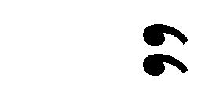
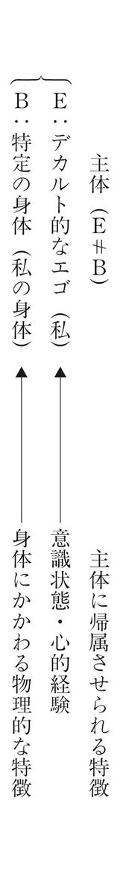

| ウィトゲンシュタイン 「私」は消去できるか シリーズ・哲学のエッセンス | |
| 入不二 基義 | |
| (2006) | |
シリーズ・哲学のエッセンス
ウィトゲンシュタイン
「私」は消去できるか
入不二基義
序 章│不二の法門に入る──補助線として
この本のテーマ
この本のテーマは、ウィトゲンシュタインの「私」をめぐる思考を追いかけることであり、それのみに集中しようと思う。つまり、ウィトゲンシュタイン哲学の全体像やその他のテーマは、まったく扱わない。その意味で、この本はかなり限定された「ウィトゲンシュタイン本」である。
しかも、追跡するためのこちら側の視座も、ただ一つに限定しようと思う。ウィトゲンシュタインの「私」をめぐる思考を、ただ一つの観点からのみ追いかける。その視座・観点とは、ひとことで言えばこうなるだろう。〈強力で特異な「私」というあり方は、強力で特異であるがゆえに、消え去り見えなくなる〉。ウィトゲンシュタインは、その生涯の哲学を通じて、独特のやり方で「私」の消去を試みた。それは、「私」など大した存在ではないと考えるからではなく、むしろ逆である。強度があまりにも大きいからこそ、「私」は消え去り見えなくなるのがふさわしい。「私」はすべてであるからこそ、「私」は無に等しいのである。
そのような観点からのみ、ウィトゲンシュタインの「私」をめぐる思考を追いかける。その意味で、この本はかなり偏向した「ウィトゲンシュタイン本」である。私に見えた限りでの（ということは私に興味がある限りでの）「ウィトゲンシュタイン」しか、この本には登場しない。
そしてまた、材料も以下の（１）～（３）だけに絞ることにしよう。それ以外の著作や箇所は、（参考にすることはあっても）中心的な材料としては扱わない。限定された素材と限定されたテーマと、そしてただ一つの観点・視座。そのように焦点を絞り込むことによって、ウィトゲンシュタインの「私」をめぐる思考の奥深くまで、分け入っていきたい。
（１）『論理哲学論考』の独我論の箇所（第一章で扱う）
（２）『青色本』等の無主体論と呼ばれる考察（第二章で扱う）
（３）『哲学探究』の私的言語論の箇所（第三章で扱う）
（本文中のウィトゲンシュタインの引用については既存の邦訳を参照させていただいたが、訳は入不二による。）
正反対の一致
ウィトゲンシュタインへの集中的な考察を始める前に、遠く離れたところから「補助線」を引いておこう。集中する前には、リラックスしておくことも必要なので、一つの「お話」を補助線として使いたいと思う。
さきほど、「「私」はすべてであるからこそ、「私」は無に等しいのである」と書いた。「すべて」と「無」は、一見相反するように見えるかもしれない。「「私」というあり方は、強力で特異であるがゆえに、消え去り見えなくなる」というのも、同様に思われるかもしれない。「強力で特異である」ならば、消え去るどころか、目立って目立って仕方がないはずではないのか。
三角形や四角形の「角」の数をだんだん増やして、何千角形・何万角形......にしていくと、「円」に近づいていく。「角」が無限に多くなることは、「角」が無くなることに等しいのである。無限に多いことと無いこととの一致。そのように、極端に反対であることは、実は一致しているということがある。「正反対の一致」である（Ｎ・クザーヌス）。「私」というあり方は、無限に強力で特異であるからこそ、まったく目立たなくなって消えてしまう。そういう「正反対の一致」もまた、ありうるかもしれない。
不二の法門に入る
大乗仏典の一つ『維摩経』の第八章（入不二法門品）では、「不二の法門に入る」（さとりの境地に入る）とはいかなることかについて、議論が展開されている。三十一人の菩薩（修行者）たちとマンジュシリー（文殊師利）が、主人公の維摩（ヴィマラキールティ）の前で、それぞれ自説を述べる。ちなみに、私の姓「入不二」は、この箇所に由来する。
最初の菩薩は、「......生じることと滅することとが二である。ところで、生じることなく起こることがないばあいには、滅することはまったくない。法は無生であるとの確信を得ること、これが不二にはいることです」と説く（『大乗仏典』７、中央公論新社、長尾雅人・丹治昭義訳、以下も同様）。
十一人目の菩薩は、次のように説く。「これは幸福、これは不幸というのが二である。知識がきわめて清浄なためにあらゆる数値を離れており、知恵が虚空と等しくさえぎられることがないならば、これが不二にはいることです」。
「二」とは、「生と滅」や「幸と不幸」のような二項対立の状態であり、「不二（二ではない）」とは、「対立する二項のどちらでもない」ことによって、二項対立から自由になっていることである。「さとり」とは二分法的な概念の軛から、解放されていることなのだろう。たしかに、「生じるのでもなければ、滅びるのでもない」とすれば、すなわち「そもそも生まれ出ていない（無生）」ならば、「生と滅」という二項対立に陥ることはない。「幸と不幸」の場合にも、幸不幸をはかる物差し（幸か不幸かを問題にする観点）からまったく離れていて、どれくらい幸なのかどれくらい不幸なのかという問題がそもそも立ち上がらないことが、「不二」であろう。
十二人目の菩薩も、「これが世間的なもの、これが超世間的なものというのが二である。しかし、世間の本性が空であるばあい、そこにはなんらそこから（超世間へ）出ることもなく、そこへはいることもなく行くことも行かないこともない。このことが不二にはいるということです」と説く。同じ論理である。
さて、二十五人目の菩薩は、少し違った論理を使う。「功徳と非功徳とそのいずれでもないもの（不動）との（三種の）行為がなされるというのが二であることであり、功徳と非功徳とそのどちらでもないものとがすべて無作為であるというのが、不二であることです」と説いている。
さきほどは、「ＰとＰの否定」（生と滅や、幸と不幸、世間的と超世間的など）が「二」であり、「ＰでもＰの否定でもどちらでもない」が「不二」であった。二十五人目の菩薩もその延長線上にいるが、議論はさらに迫り上がっている。
というのも、「ＰとＰの否定」（功徳と非功徳）だけではなく、「そのどちらでもないもの」（不動）まで含めて、その三つが「二」であると言われているからである。つまり、それまでの菩薩たちが「不二」だと言ったものまでが、「二」の中へと組み込まれている。もはや「二」とは、単純な「二項対立」ではなくて、「二項対立」の重層化をも含んでいる。すなわち、「「功徳と非功徳」という動」と「そのどちらでもないという不動」という対立もまた、「二」なのである。それゆえ、二十五人目の菩薩に言わせれば、「不二」とは、そこまで含めても「二」に回収されてしまわないことでなければならない。そのような「不二」とは、いっさいをしないこと（無作為）なのである。
そして最後に、三十二人目のマンジュシリー（文殊師利）が登場して、菩薩たちに向かって言う。「......あなたがたの説いたところは、それもすべて二なのである。なんらのことばも説かず、無語、無言、無説、無表示であり、説かないということも言わない、これが不二にはいることです」と。
迫り上がった議論は、マンジュシリーでさらに迫り上がり、極点に達している。マンジュシリーは、それまでの菩薩たちのすべての言説を、「ことば」という点で一括りにして、どれも「二」であるとして退けている。「ことば」の本質的な働きとは、「分ける」ことである。たとえば、「Ａ」という名前をつけることは、ＡとＡでないものを「分ける」ことである。だからこそ、「ことば」は「二」（根源的な分割）なのである。したがって、「ことば」自体を捨て去ること、つまり「無語、無言、無説、無表示......」こそが、「不二」（分割の未遂行）という境地に入ることである。これが、マンジュシリーの説くところである。
維摩の沈黙
そもそも、マンジュシリーを含む菩薩たちが自説をそれぞれに展開したのは、主人公の維摩が、「不二に入るとは、どのようなことか」という問いを最初に投げかけたからである。最後に答えたマンジュシリーは、「ことばによって分別を行なわない沈黙こそが、不二に入ることである」という自説を展開した後に、主人公の維摩へと問いを投げ返す。「われわれはおのおのの説を述べたのですが、あなたにもまた、不二の法門について、何か語っていただきたいのですが」と。最初の問いは、菩薩たちを経由して、もう一度維摩のところに戻ってくる。
維摩はどのような自説を展開したのだろうか。マンジュシリーのところで議論は極点に達しているように見えるが、それ以上の説など展開できるのだろうか。いや、維摩はマンジュシリーの求めには応じない。つまり、維摩は口をつぐんでひと言も言わなかった。維摩は沈黙したままである。この沈黙の持つ衝撃は、「維摩の一黙、雷のごとし」と言われ、『維摩経』のクライマックスとして有名である。
維摩の沈黙の後、マンジュシリーは再び登場し、次のように維摩を褒め称える。「大いに結構です、良家の子よ、これこそ菩薩が不二にはいることであって、そこには文字もなく、ことばもなく、心がはたらくこともない」と。
ことばと沈黙
さて、マンジュシリーの語りと維摩の沈黙とは、どのような関係にあるのだろうか。
それを「理論と実践」の対のように考えるのは、どうだろうか。つまり、マンジュシリーは「ことばを使わない沈黙こそが、不二に入ることである」という「理論」を語っているのに対して、維摩はまさにその沈黙を「実践」している。議論の頂点を言い当てたように見えたマンジュシリーも、維摩の「実践」によって乗り越えられてしまう。さすが維摩だ。そういう解釈は、どうだろうか。
この解釈は、あまりにも紋切り型すぎて、面白くない。理論と実践を静的に対立させるだけでは、沈黙についての語りと沈黙そのものについての、微妙な関係に分け入ることなどできない。そもそも、マンジュシリーの「理論」もまた、「理論を語る」という一つの「実践」に他ならないのである。つまり、「理論と実践」という対立ではなく、むしろ「ことば」の実践と「沈黙」の実践の対比を見るべきであろう。異なる「実践」どうしのすれ違いと絡み合いこそが、重要なのである。
それでは、こういう解釈はどうだろうか。維摩の沈黙後のマンジュシリーの再登場、そして維摩を賞賛する弁は、余計であり、削除した方がよかったのではないか、という解釈である。たしかに、維摩が沈黙したまま終わっていた方が、物語として「きれい」な感じがしないでもない。再登場してしゃべるマンジュシリーは、うるさくも感じられ、物語の完成度や品を落としているようにさえ見える。維摩の沈黙という最高地点で、なぜ話を閉じなかったのか。
しかし、そのように閉じていないことの方が、物語としてのきれいさや完成度よりも、重要である。たしかに、議論の迫り上がりの最高地点（マンジュシリー）をも越えたところに、維摩の沈黙が位置づけられている。沈黙についての語り（マンジュシリー）は、沈黙そのもの（維摩）にはけっして届かない。マンジュシリーがどんなに「沈黙」を強調し、ことばを捨て去ることを推奨しようとも、そのこと自体がことばを使って行なわれ、どこまでも語られてしまう。つまり、マンジュシリーもまた、他の菩薩たちと同様に、「二」（ことば）へと転落せざるをえない。維摩の「沈黙」は、「ことば」によっては到達不可能な「外」なのである。「維摩の一黙」は、その「外」の到来だからこそ、「雷のごとし」という衝撃力を持ちうるのである。
しかし、これはことがらの半面である。維摩の「沈黙」は、すでに十分に「ことば」の中へと巻き込まれている。そもそも、菩薩たちの議論の迫り上がりを起動したのは、維摩の「ことば」であった。維摩が「不二に入るとは、どのようなことか」と問いかけたからこそ、そして菩薩たちがそれに応えて一段一段議論を迫り上げていったからこそ、その上に「沈黙」が鎮座できるのである。つまり、維摩の「沈黙」は、すでに「不二」をめぐる言語ゲームの内で働いている。さらに、維摩の沈黙が、ことばを積み重ねていっても届かないものであることに、私たちが気づけるのは、この言語ゲームに私たち自身も巻き込まれることによってなのである。
ことばは、ことばでは到達不可能な「外」を、ことばの「内」へと巻き込んで働いている。言い換えれば、維摩の沈黙は、ことばの「外」にあるとともに、ことばの「内」にもある。
さとりとおおぼけ
いやしかし、維摩の沈黙は、それ以上のもっと「外」──すなわち言語ゲームに巻き込まれている「外」ではないような「外」──にあるのかもしれない。つまり、そもそも「不二をめぐる言語ゲーム」になど巻き込まれていないのかもしれない。
維摩は、「くせ者」あるいは「あまのじゃくな人」だったようである。仏陀の弟子たちを、逆説的な論でよくやり込めていたらしい。「入不二法門品」の場面は、維摩が病気で寝込んでいるところへ、仏陀の弟子たちが見舞いに来て問答するという設定であるが、維摩は実は仮病で寝込んでいるだけなのである。そのような維摩の人物像まで考慮に入れると、次のように想像したくなる。
維摩が沈黙していたとき、それはほんとうに沈黙の「実践」だったのか。マンジュシリーが理論的に述べようとした不二（沈黙）を、維摩は「実践」などしていなかったのではないか。つまり、維摩は、ただ居眠りしていただけかもしれない。あるいは、ただぼぉーっとしていて、菩薩たちの議論などまったく聞いていなかっただけかもしれない。その場合には、沈黙は、不二の「実践」ではなく、ただの沈黙、ただの呆けである。維摩は、さとりの境地の実践者なのではなく、何も考えずにただぼけっとしていただけなのである。この可能性は、重要である。
「ただの沈黙（ただの呆け）」は、「沈黙の実践」とは違って、「不二をめぐる言語ゲーム」に巻き込まれていない。言語ゲームに巻き込まれている「外」よりも、もっと「外」である。それにもかかわらず（あるいは、だからこそ）、「ただの沈黙（ただの呆け）」と「沈黙の実践」とは区別がつかない。いやむしろ、「沈黙の実践」が真のさとりの境地であるならば、「ただの沈黙（ただの呆け）」と区別がつかないのでなければならない。「さとり」と「おおぼけ」は、紙一重である。
そして、「さとり」と「おおぼけ」が紙一重のポジションに維摩はいるのだとすると、話の終わりには、マンジュシリーの再登場とおしゃべりがあった方がいい。維摩の「さとり」と「おおぼけ」が紙一重であるのと同じように、マンジュシリーの「さとりへの熱き思い」と「過剰なおしゃべり」もまた紙一重である。維摩の沈黙がマンジュシリーの語りを越えているという単純な話では終わらないことを示すためにも、最後にもう一度、マンジュシリーが登場しなくてはならないのである。
この『維摩経』の話が、どのようにこれからの考察の補助線になっているのかは、第一章以降を読んでいただかないと分からないだろう。ただ、「正反対の一致」「語ることと沈黙」「言語の内と外」「言語ゲーム」などにポイントがあることを、あらかじめ記しておこう。
第一章│独我論──「限界」としての「私」とは何か
第一章では、ウィトゲンシュタインの前期の著作である『論理哲学論考』（Tractatus Logico-Philosophicus, 以下『論考』と呼ぶ）を取りあげる。その著作の「独我論」を論じた箇所を読み解きながら、ウィトゲンシュタインが「私」についてどのように思考したのかを追跡しよう。
「独我論」とは、一般的に言えば、「ほんとうの意味で存在するのは、私だけであり、それ以外はすべて、私のこころに浮かぶ表象にすぎない」という説である（「いわゆる独我論」と呼ぼう）。そこからは、他人や外部世界などほんとうは存在しないのだとか、確実に知ることができるのは私のこころのみである、というような考えも出てくる。
しかし、ウィトゲンシュタインが考える「独我論」は、その一般的な意味での「独我論」（いわゆる独我論）とはかなり違う。「私の言語の限界が、私の世界の限界を意味する」。これが、ウィトゲンシュタインの独我論の中心テーゼである。はたして、両者はどのように異なっているのだろうか。
１│『論理哲学論考』──自らを消し去るべき本
『論考』の全体像
まず、『論考』を構成している七つの主要テーゼをそのまま列挙しておくと、次のようになる。
⒈ 世界とは、実際に成立していることがらのすべてのことである。
⒉ 実際に成立していることがら、すなわち事実とは、諸事態の成立のことである。
⒊ 事実の論理的な像が、思考である。
⒋ 思考は、有意味な命題である。
⒌ 命題は、要素命題の真理関数である。（要素命題は、自分自身の真理関数である。）
⒍ 真理関数の一般形式は、［p,, N()］である。これは、命題の一般形式である。
⒎ 語りえないものについては、沈黙しなければならない。
漠然とした雰囲気だけ摑めればよしとしよう（６の記号表現など、説明なしでは何のことか分からなくて当然である）。この七つの主要テーゼから読み取れることは、たとえば次のようなことである。
『論考』の中には、「世界」と「思考」と「言語（命題）」という三つの主な領野がある。１と２では「世界」が、３と４では「思考」が、５と６では「言語（命題）」が焦点となっている。もちろん、１から６までを順番にたどってみると分かるように、この三つの領野は緊密に結びついている。
大きく捉えれば、「世界」と「言語（命題）」の二領野が、「思考」という領野によって媒介されて結びついている。もう少し細かく捉えれば、その三者をつないでいる水脈が「論理」や「像」や「意味」である。つまり、『論考』の全体は、〈「世界」─論理─像─「思考」─意味─「言語」〉というような構成になっている。
最後のテーゼ７は、ウィトゲンシュタインのせりふとして最も有名なものである。「世界」「思考」「言語」について論じた後に到達する地点が、「語りえないもの」であり「沈黙」である。ざわつく言語など消え去った静謐な世界が開けている。そのように思わせてくれる「ラスト・ワード」である。最終テーゼ７の直前の６・５４もまた、その「はしご」の比喩が有名である。
６・５４ 私の諸命題が解明を行なうのは、次のようにしてである。私を理解する人は、最後にはそれらの命題が無意味であることに気づくのだが、そのように気づくのは、私の諸命題をくぐり抜け、その上に立ち、さらにそれを乗り越えたときにである。そういう仕方によって解明を行なう。（いわば、はしごを登りきった後には、登りきった者は、はしごを投げ捨てなければならない。）
この本の諸命題を乗り越えなければならない。そのとき、その者は世界を正しく見る。
このあたりを読むと、序章でふれた『維摩経』の話を思い出さないだろうか。維摩の「沈黙」とウィトゲンシュタインの「沈黙」、菩薩たちの「諸発言」とウィトゲンシュタインの「諸命題」。
番号が付されて階層化された命題群（1 1.1 1.11 1.12 1.13 1.2...... 6.53 6.54のようにナンバリングされている）は、最終テーゼ７のためにこそ組織されている。長短合わせて五二六個に及ぶこれらの諸命題は、たった一つの目標（最後の一行）を指し示すために緊密に連携し合っている。そして最終的には、『論考』という本自体が、「投げ捨てられるべきはしご」である。『論考』は、「自らを消し去るべき本」として書かれている。
「独我論」の位置
『論考』が、独我論を中心的に論じるのは、５・６から５・６４１までの十二個の命題群においてである。その箇所は、５・６というテーゼに対する階層化した注釈群になっている。もちろん、５・６自身が５の注釈にあたる。５・６のテーゼと、十二個の命題群の階層構造を図に示しておこう。
５・６ 私の言語の限界が、私の世界の限界を意味する。
５・６を含む十二個の命題については、以下で詳しく論じることにして、ここでは次のことだけ確認しておこう。それは、この５・６というテーゼにも、『論考』の全体像（の縮図）が表れているという点である。つまり、「世界」と「思考」と「言語」という三領野の区別と連関が、この箇所にも浸透している。「世界」と「言語」に関しては、５・６を読めば一目瞭然だろう。両者の「限界」という形で、「世界」と「言語」は独我論の問題に入り込んでくる。
５・６には、「思考」のことが書かれていないと思われるかもしれない。しかし、そうではない。５・６の「意味する」に注目しよう。先ほど述べた〈「世界」─論理─像─「思考」─意味─「言語」〉というつながりを見れば分かるように、「世界」と「言語」の「意味する」という関係は、「思考」を経由する。ということは、５・６においても、「意味する」ということを通じて、実は「思考」が登場していることになる。
『論考』は、その全体においても、その部分（ここでは独我論を論じる箇所）においても、「世界」「思考」「言語」という三大領野の区別と連関が、まさに基調となっている。逆に言えば、独我論の問題は、単に一部分の小さな問題なのではない。『論考』全体が担っている問題の「縮図」なのである。
このように、『論考』の独我論の特徴は、「世界」「思考」「言語」の区別と連関という『論考』全体の骨組みが、そのまま独我論の骨組みでもあるという点にある。
もう一つの特徴は、『論考』の独我論が、「いわゆる独我論」とは違うという点である。あるいは、『論考』の独我論は、「いわゆる独我論」を乗り越えようとする独我論である、と言ってもよい。もう少し正確に言えば、「いわゆる独我論」と目指されるべき「徹底された独我論」とのあいだに立って、前者から後者へと登るための「はしご」の役割を果たすのが、『論考』の独我論の叙述である。独我論という問題においてもまた、『論考』の自己消去運動が作動しているのである。
２│いわゆる独我論
反転図形
「ルビンの盃」と呼ばれる反転図形がある（図１）。左右対称形の白い盃の図としても見ることができるし、二人の横顔（の影）が向かい合っている図としても見ることができる。一方が図として見えているときには、他方は背景（地）として退く。黒地に白の図として見えるのか、白地に黒の図として見えるのか、どちらかである。一方が見えているときには、他方は見えない。そして、いったん二つの見え方があることに気づくと、一方の見え方から他方の見え方へと容易に反転する。しかも、二つの見え方は互いに排他的であるにもかかわらず、盃の図と横顔の図は、がっちり組み合わさって一つの全体（図柄）を構成している。
素朴な実在論といわゆる独我論
「いわゆる独我論」が図として浮かび上がるときに、その背景（地）にあるのは「素朴な実在論」である。一方、素朴な実在論の方を図化しようとすると、いわゆる独我論の方は背景に退くが、実は両者は一体となって或る図柄を構成する。いわゆる独我論と素朴な実在論とのあいだには、反転図形にも似た関係があって、二つの説は対立して相互に排他的でありながらも、一方を見つめている最中に他方への移行が容易に起こってしまう。
素朴な実在論によれば、「私」もまた、他人たちや他のものと相並んで、この「世界」の内に存在している。その意味で、「私」はことさら特別な存在ではない。「私」は、「世界」という座標の内のただの一点である。
いわゆる独我論は、素朴な実在論に反対する。「私」は、他人たちや他のものと相並ぶような存在ではなく、まったく異質で特別な存在である、と。「世界」という座標内の或る一点として「私」は存在するのではない。「世界」（そしてその中のすべてのもの）の方こそ、「私」のこころに浮かぶ表象にすぎない。「世界」の内に「私」が存在するのではなく、「私」の内に「世界」が存在するのである。「私」は座標内の或る一点なのではなくて、「私」の方が座標であり、他のすべてはその座標内でこそ、はじめて位置づけられるのである。
こうして、素朴な実在論といわゆる独我論は対立する。しかしよく見ると、両者は通底していることが分かる。いや、通底しているからこそ、両者は対立できるのである。
●素朴な実在論が説く「世界」内の「私」に注目し、いわゆる独我論は批判を開始する。
●その「私」（のこころ）の内にこそ、他人たちや他のものが、そして「世界」が現れ出ている。ゆえに、その「私」の表象の内にこそ、「世界」全体がある。
●素朴な実在論は反論する。その表象している「私」もまた、「世界」の中の一存在者にすぎない。
●いわゆる独我論は再反論する。そのような「世界」全体の表象も「私」の内にある。ゆえに、その「私」のこころの中にこそ、「世界」全体がある。
●素朴な実在論は再反論する。その「私」もまた、「世界」の中の一存在者にすぎない。
このように、いわゆる独我論と素朴な実在論との反転は続く。「私」を蝶番のようにして、いわゆる独我論と素朴な実在論は、相互に入れ替わる。この事態は、たとえば、次のようにイメージできるだろう。黒い丸が「私」を、白い丸が「世界」を、四角や三角は「世界」内に存在する他人や他のものを表すことにしよう。図２の左が素朴な実在論であり、右がいわゆる独我論に相当する。左の図では、白丸の内に黒丸があるが、右の図では、その黒丸こそが白丸を包摂する。交差する矢印は、両者の反転関係を表す。
こうして、いわゆる独我論は、「全体」「すべて」という名の特別な位置を、「私」へと付与する。他のものはすべて、「私」の内で浮かんでは消える泡沫のようなもの（表象）にすぎない。一方、そのような移ろいゆく表象を含みつつ、けっして変わることなく存在しているのは、「私」という器だけである。ほんとうの意味で存在していると言えるのは、そのような「私」という絶対的な入れ物だけである。いわゆる独我論はそのように考える。
いわゆる独我論と『論考』の独我論
ウィトゲンシュタインは、いわゆる独我論をそのまま容認したりはしない。しかし、いわゆる独我論を否定して、素朴な実在論を擁護するのでもない。むしろ、どちらも容認はせず、両方をいっぺんに純化しようとする。
そのために、ウィトゲンシュタインは、いわゆる独我論を『論考』という濾過装置に放り込む。『論考』を通過させることによって、いわゆる独我論は、「徹底された独我論」へと純化される。そこまで行けば、「対立／反転関係」など、いっぺんに雲散霧消する。ウィトゲンシュタインは、そう考えていたはずである。
いわゆる独我論が、徹底された独我論へと純化されるだけではない。素朴な実在論の方もまた、同じように純化された姿へと変換される。それを、ウィトゲンシュタインは「純粋な実在論」と呼ぶ。
二つの純化形態、すなわち「徹底された独我論」と「純粋な実在論」とは、どのような関係にあるのだろうか。驚くべきことに、「徹底された独我論」と「純粋な実在論」とは、〈一つ〉になってしまうのである。そもそもは対立していたはずの独我論と実在論が、純化されることによって、最終的には一致してしまう。
ここでもまた、序章でふれた『維摩経』が思い出されないだろうか。「さとり」と「おおぼけ」という、反対に見えるものが一つになって区別できないようなあの地点。それを彷彿させるような「一致」が、実在論と独我論のあいだで生じる。『論考』の５・６４には、こう記されている。
５・６４ ここにおいて、独我論は徹底的に遂行されると、純粋な実在論と一致するということを見て取ることができる。独我論の私というものは、広がりを持たない点へと縮退し、その私と対応する実在がそのまま残る。
言うまでもなく、「徹底的に遂行された独我論」が独我論の純化された形態であり、「いわゆる独我論」とは「完全には遂行されていない独我論」に相当する。見取り図としてまとめておくと、四者の関係は図３のようになる。
図２で述べた「反転」においては、〈その「私」の内にこそ世界があるその「私」もまた世界の中にある〉という具合に、同じその「私」が両論のあいだでやり取りされていた。しかし、二つの「私」がまったく別のものならば、そのような対立／反転のキャッチボールを行なうことが、そもそもできないことになる。その場合には、同じ一つの「私」が、世界の内に取り込まれたり世界を自らの内に取り込んだり、つまり収縮したり膨張したり、そういう二つのあり方をしているのではない。そうではなくて、世界の中の「私」と世界を包み込む「私」は、ただひたすら異なっていて交わることがないのである。だから、対立も反転も起こりようがない。
二つの「私」は、ただ単に切り離されるだけではない。どちらの「私」も、純化された姿へと変えられていく。「世界」の中の「私」の方は、「合成された魂」（５・５４２）「心理学があつかうような人間の心」（５・６４１）等と呼ばれる「複合的なもの」へと解体されて、単一の主体としての資格を失うことになる。一方、「世界」を包み込む「私」の方は、いくつかの段階を経由しながら、「世界の限界」（５・６３２）というあり方へと昇華されて、語りえず示されるものになる。
まず先に、「私」が「世界の限界」へと昇華されていく議論をたどり、その後に、「私」を「複合的なもの」へと解体する議論を見ることにしよう。「私」が、「世界の限界」と「世界の中の複合的なもの」という両極へと引き裂かれることによってこそ、逆説的であるが独我論と実在論とは一致することになる。
第一の比喩──「私が見出した世界」という本
いわゆる独我論の「私」とは、「世界」全体を自らの内に包み込むような「私」であった。それは、「世界」全体を自らの思考・表象の内に取り込むような主体である。しかし『論考』は、思考し表象する主体を、独特のやり方で消し去る。その考察が、５・６３１と５・６３２である。
５・６３１ 思考し表象する主体は、存在しない。
「私が見出した世界」という一冊の本を私が書くとするならば、その中では私の身体についても報告がなされ、身体のどの部位が私の意志に従い、どの部分がそうではないかなどが語られるべきであろう。これはすなわち、主体を孤立させる方法、というよりむしろ、ある重要な意味において主体が存在しないということを、示す方法なのである。すなわち、主体についてだけは、この本の中で話題になることがありえない。
５・６３２ 主体は世界に属するのではなく、それは世界の限界である。
この「一冊の本」は「世界」の喩えであり、その本を書く「私」とは、「思考し表象する主体」である。この比喩で強調されているのは、「思考され表象されることがら」の方はすべて、この書物に書き込むことができるが、それを「思考し表象する主体」の方は、この書物の中には書き込めないということである。どうして主体は書き込めないのだろうか？
思考し表象する主体（書く主体）とは、思考し表象する人間（書き手）のことではないからである。思考し表象する人間（書き手）のことならば、いくらでも詳しく本の中に書き加えることができる。しかし、どんなにその人間（書き手）の詳細を書き加えても、その「詳細を書き加えること」そのものについては書くことができない。いや、その「詳細を書き加えること」についても、さらに記述を加えることはできる。しかしその場合には、「さらに記述を加えること」そのものについては書くことができない。
このように、どうしても書き込めない主体とは、思考し表象する人間（書き手）のことではなくて、思考する・表象する・書くということそれ自体である。そのような「行為それ自体という主体」は、「思考され・表象され・書かれた」内容の中には登場しえないが、しかしその内容を成立させている「不在」としてはある。「思考し表象する主体が、世界の限界である」とは、「書くことそのものとは、書かれた内容の全体をぴったりと覆っている不在としてある」ということと同じである。
「限界」という概念に注目しておこう。『論考』のかなり重要なタームである。しかも、「限界」概念は、いくつかの要因を含み込んでいて、多面的である。この書物の比喩の場面で重要な点は、「限界」という概念が、「全体」と「不在」という二つの要因を含んでいることである。書かれたことの全体とそれにぴったり重なっている不在の主体、それが「書物」の限界である。ここでは、「限界」とは、「不在」の主体によって閉じている「全体」のことなのである。
これで、『論考』は「いわゆる独我論」から離れる一歩を踏み出したことになる。「思考し表象する主体」は、いわゆる独我論の「私」のようには、「世界」をその外側から包み込んで「ある」のではない。あくまで、「ある」のは「世界（書物）」に書き込まれたことの「全体」のみである。一方、「思考し表象する主体」の方は、その「全体」の中には書き込みえない「不在」として「全体」にぴったり重なっている。
第二の比喩──眼と視野
しかし、たとえ「不在」ではあっても、「思考し表象する主体」がどのようなものであるかは、「世界全体」のあり方から推論されるのではないか？ ちょうど、書物に書かれている内容全体から、それを書くということ自体がどのようなものなのかは、（書物内に書き込まれていなくとも）推論されるように。あるいは、視野に見えているもののあり方から、それを見ている眼がどこからどのように見ているか等は、推論されるように。
ウィトゲンシュタインは、「主体を推論できる」という考え方を退ける。なぜならば、そのような「推論」が成り立つためには、次の二つのことが必要であるにもかかわらず、世界（視野）の中で起こることと主体（眼）との関係については、そのどちらも成り立たないからである。（１）推論のための材料とそこから推論されることとは、別様ではありえないような決まった結びつきを持たなければならない。（２）推論のための材料とそこから推論されることとは、同じ視野（世界）に属する同じ次元のものでなければならない。ウィトゲンシュタインは、次のように述べる。
５・６３１ すなわち、視野はけっしてこういう形をしていない。

５・６３４ このことは、私たちの経験のどの部分もア・プリオリではないということと関係している。
私たちが見ることはすべて、また別様でありうる。
およそ私たちが記述できることはすべて、また別様でありうる。
ものにはア・プリオリな秩序など存在しない。
この５・６３１の図は、二つの点で誤っていることになる。一つは、眼が視野の内に書き込まれている点であり、もう一つは、視野が境界線で囲まれている点である。眼は視野の中に位置しないし、視野には境界線などない（むしろ限りがない）。
視野には限りがないのだから、視野の中で出会われるものにも限りがない。つまり、出会うものがあらかじめ制限されて決まっているわけでもなければ、現に出会っているものが必然的なわけでもない。「ア・プリオリな（経験に依らないあらかじめの）秩序など存在しない」のである。すなわち、現に出会っているものとは違ったものと出会うこともできたはずだという反実仮想（別様）が、つねに成り立つのである。
５・６３１の図のように、「眼」が視野の片隅に位置づけられてしまうと、（視野内はすべて別様でありうるのだから）その「眼」が「存在しない」という反実仮想もまた、可能であることになってしまう。しかし、存在することもしないこともどちらも可能なものなど、もはや主体の名に値しないだろう。したがって、主体（眼）は、視野内には「ない」のでなければならない。ちょうど「書物」の場合に、主体は書き込みえないのと同じように。
また、「書物」の比喩における主体とは、人間としての「書き手」のことではなかったように、視野における眼（見ている主体）も、ものとしての「眼球」のことではない。むしろ視野の主体とは、視野内で出会うものがいかに変わろうとも、それでも変わりようがない「見ていることそれ自体」である。このように登場することなく、かつ別様でありうるものに依存しない「主体」を、ウィトゲンシュタインは「形而上学的な主体」と呼ぶ。視野の内にない「眼」とは、「形而上学的主体」の比喩なのである。
したがって、もし５・６３１の図の誤りを修正するとすれば、次のようになるだろう。まず、境界線を消して、視野を限りなく開かなくてはならない。そして、その限りなく開かれた視野の中には、主体に相当するような眼を描いてはならない。ということは、図に描けることは、見えている風景をただ見えているように、淡々と描くことのみとなる。そこには、境界線も主体も描かれることはない。
こうして、「不在の主体を推論する」という考え方は、退けられる。（１）世界（視野）の内容は、いくらでも別様でありうるので、不在の主体（見ていることそれ自体）とのあいだには、「あらかじめ決まった結びつき」等ないのだから。そして、（２）主体（眼）は、けっして世界（視野）の中には属さない次元の異なるものなのだから。
「限界」という概念
「限界」という概念に注意しておこう。「眼と視野」の比喩によって、「限界」概念を構成する要因がいっそう明確になっている。「全体」と「不在」という要因に加えて、さらに「無境界」と「別様」（反実仮想）という要因もまた、「限界」概念に関わってくる。「限界」概念の基本的な意味を⓪として加えて、まとめておこう。
⓪「限界」とは、あるものごとが、それでありうるぎりぎりの「条件」である。
①「限界」とは、「部分」ではなく「全体」に関わる。
②「限界」とは、「全体」の外に「ある」何かではなく、「全体」を成り立たせている「不在」というあり方をする。
③「限界」とは、境界線なき「全体」であり、その「全体」の中身は別様でありうる。
あらかじめ述べておけば、「限界」概念の構成要因として、次の④が加わることによって、「私」の昇華は完成する。
④「限界」とは、「一つかぎり」「一回かぎり」という唯一性を示唆する。
先へ進む前に確認しておきたいのは、「限界」とは、いくつもの要因（⓪～④など）を含み多面的ではあるけれども、ある種の〈かたち〉のことだという点である。
まず、次のように考えてみる。ページに何も書かれていなかったら、「本」は「本」ではなくなってしまうだろうか。必ずしもそうではない。「白い本」（読者が中身を書く本）として認められるならば、「ページに何も書かれていない本」も「本」のうち、となるだろう。
しかし、ページはめくることができず、表紙が蓋になっていて、開けると中に何かをしまえるような空間があれば、これはもう「本」ではなく、本に似せた「箱」になるだろう。「本」の「限界」とは、たとえばそのようなことである。つまり、「本」が「本」ではなくなってしまうようなデッドロック、「本」がぎりぎり「本」でありうる条件が、「本」の「限界」なのである。どんなに形やスタイルは変わっても、「本」が「本」であるかぎりは無くならない、本としての抽象的な〈かたち〉に相当するもの、それが「限界」である。
「思考し表象する主体（書く主体）」「形而上学的な主体（眼）」は、世界（書物・視野）の内や外のどこかに「ある」ものではなく、「世界（書物・視野）の限界」である。これもまた、主体（書く主体・眼）とは、世界（書物・視野）内には現れなくとも、世界（書物・視野）がそれとしてあるための〈かたち〉だということである。
「世界」の中で起こることがまったく別様のものであったとしても、その別様の中身を持つ「全体」は、やはり「世界」なのである。世界であるという〈かたち〉は変わらない。ちょうど、書物に書かれる内容が、どんなに別様であったとしても、それが書物であることに変わりがないのと同じように。あるいは、「視野」に展開される風景がまったく別様のものであったとしても、それが「視野」であることを止めてしまうわけではないのと同じように。「世界」は、いくらでも「別様である」ことが可能である。それでもなお「世界」は、「世界」という〈かたち〉を失わない。この点こそが、③が述べているポイントである。
しかし逆に、どうなってしまったら、「世界」はその最低限の〈かたち〉すら失ってしまうのだろうか？ 「世界」が「世界」でなくなってしまうデッドロックとは、どこにあるのだろうか？ その点こそが、④が述べているポイントである。以下で説明しよう。
「私」の昇華
５・６３ 私は私の世界である。（ミクロコスモス。）
５・６３２ 主体は世界に属するのではなく、それは世界の限界である。
「私」は、「世界の中の私」ではなくて、「私の世界」というあり方をしている。つまり、世界の中に一アイテムとして住まう対象というあり方をしていなくて、所有格として世界にぴったりと覆い被さっている。世界の〈かたち〉として。このことが、「世界に属する」「世界の限界」という対比によって言われている。
５・６３は、５・６２の二段落目や５・６２１と合わせて読まれるべきだろう。
５・６２（第二段落） 世界が私の世界であることは、この言語（私が理解するただ一つの言語）の限界が、私の世界の限界を意味するということのうちに示されている。（太字強調は引用者）
５・６２１ 世界と生とは一つである。
５・６３と合わせて考えると、〈私＝私の世界＝世界＝生〉という等式が成立していることになる。この等式が成立するような「私」とは、もちろん世界の内の一人物ではないけれども、世界の外から世界を眺めたり、コントロールしたりできる超越的な神さまのような存在者でもない。「私」は、世界の内にいるのでも外にいるのでもなくて、世界とそして生とぴったりと一つに重なっている。つまり、「私」とは、世界が「この世界（ただ一つしかない世界）」というあり方で存在し、生が一回しかないという仕方で生きられることそのものなのであって、それと別の独立した何ものかではない。この「一つしかない」「一回しかない」という〈かたち〉が、④が示す意味での「限界」である。
「私の世界」「私の生」の中身は、③が述べるように、いくらでも別様であることが可能である。しかし逆に、どんなに中身が同じままに保たれていても、二つ以上同じものがあることが許されたり、何度でも繰り返すことができたりしてしまうと、それはもう「私の世界」「私の生」ではなくなってしまう。これこそが、「世界＝生」が「世界＝生」ではなくなってしまうデッドロックである。つまり、「世界＝生」は、その中身・内容にかかわらず、それがただ一つしかなく、一回かぎりのものであるということが、最低限の〈かたち〉なのである。
この意味での「限界」は、その他のもの──たとえば「本」──の成立条件としての「限界」（⓪が述べていた意味での「限界」）とまったく同じように考えられるわけではない。「本」の場合には、その「限界」のこちら側と向こう側とを比較することができる。先ほどは、「限界」のこちら側として「白い本」を、「限界」の向こう側として「本に似せた箱」を考えた。「本」と「箱」を相互に比較して、その違いを確認できる。「本」の場合には、その「限界」の両側を考えることは難しいことではないのである。
しかし、「私＝世界＝生」の「限界」の場合には、そうはいかない。たしかに、「私＝世界＝生」の様子（中身）を色々と変容させて、「別の中身の私」「別の内容の世界」「別のあり方をしている生」を想像してみることはできる。しかし、どんなに想像を逞しくしても、それが「私＝世界＝生」ではなくなってしまったものを想像することは、不可能である。つまり、「本」の場合とは違って、「限界」の両側を考えることはできない。「私＝世界＝生」の場合には、たとえどんなに変容した姿を想像したとしても、それでもなお、それは「私＝世界＝生」でしかない（他の何かではありえない）。「私＝世界＝生」は「一つしかない」「一回しかない」。これが、「本」の場合とは違った、「私＝世界＝生」における「限界」のあり方である。それは、こちら側からしか迫れない「限界」、こちら側でしかないという「限界」なのである。
ここで、６・４３１と６・４３１１も参照しておこう。
６・４３１ 同様に、死に際しても、世界は変わるのではなく、終わるのである。
６・４３１１ 死は、生のできごとではない。ひとは死を体験することがない。
（中略）
私たちの視野には限りがないように、私たちの生もまた終わりがない。
６・４３１は、「世界＝生」の「限界」を、「死」というデッドロックのところで考えようとしている。「もう一つ別の（死後の）世界」や「二回目の生」などない。「世界」や「生」はそういう〈一つである〉という〈かたち〉をしているのだから。その〈一つ〉の内で変容することはあっても、その〈一つ〉が〈別のもう一つ〉へと変わることはありえない。だからこそ、「変わるのではなく、終わる」のである。
ただし、「生」と「死」は、「本」と「箱」のような見渡し可能な対比関係にはない。つまり、「限界」の両側を思考できるようなものではない。そのことを、６・４３１１が指摘する。結局、「私＝世界＝生」の「限界」とは、終わりのないものの「終わり」、限りがないものの「限界」である。そのような「終わり」「限界」こそが、「一つ」「一回」かぎりということなのである。
こうして、「世界」を包み込む「私」（いわゆる独我論の「私」）は、「世界の限界」つまり「世界全体の〈かたち〉」として、昇華されたことになる。「世界を外側から包み込む私」という表象は、「世界とぴったり重なっている私」へと修正された。「私」は、「世界」の内なる対象でも「世界」の外なる超越者でもなく、むしろ「世界」そのものなのである。書き込まれた内容にはそれを書くこと自体が、見られている風景にはそれを見ていること自体がぴったり重なっていて分離できない。それと同じように、「私」は、「世界」「生」が「ただ一つの世界」「一回かぎりの生」であることそのものとして、「世界」「生」にぴったりと重なっていて分離できない。こうして、徹底された独我論の「私」は、「世界」「生」全体と重なることによって、むしろ独立した輪郭は失ってしまうのである。
「私」の解体
さて、「世界」の内なる「私」の方へと、話を移そう。
素朴な実在論は、「私」を世界内の単なる一人物として扱う。そして、いわゆる独我論者が抱く奇妙な考えもまた、その世界内の一人物の脳髄に宿る想念（ということは世界の内で起こっている事実）にすぎないのだと、素朴な実在論者ならば考えるだろう。たとえば『論考』の５・５４１や５・５４２に、「世界内の一人物とその者が持つ想念」に相当する考え方を見出すことができる。一部を引用しよう。「Ａ」が世界内の一人物を表し、「ｐ」が命題（信念内容・思考内容）を表す。
５・５４１ （......） とくに「Ａはｐであると信じる」や「Ａはｐと考える」などのような、心理についての命題形式において、そのように思えてしまう。
つまり表面的には、この命題形式では、命題ｐが対象Ａとある種の関係を持っているかのように見えてしまう。（......）
５・５４２ しかし、明らかに、「Ａはｐと信じる」「Ａはｐと考える」「Ａはｐと語る」は、「「ｐ」はｐと語る」という形式からなっている。そして、ここで問題になっているのは、事実と対象の対応関係ではなく、事実どうしが、その構成要素である対象と対象との対応関係を通して、対応関係にあるということなのである。
世界内の一人物としてのＡが、消去される分析になっていることに注目しよう。「「ｐ」はｐと語る」という形式には、Ａが登場しない。
「Ａはｐと考える」の例として、「入不二は、一郎が太郎と次郎の父親であると考える」を使おう。一見、入不二という名の単一の思考主体が世界内にいて、その単一のもの（入不二）が、「一郎が太郎と次郎の父親である」という命題と何らかの結びつき（〈単一の思考主体Ａ─考える─命題内容〉というような三者関係）を持っているかのように見える。しかし、ウィトゲンシュタインは、それを「見かけ」にすぎないと言う。
つまり、入不二という人物Ａは、単一のもの（対象）ではなく、複数の要素（対象）から構成された合成物なのである。ちょうど、命題ｐ「一郎が太郎と次郎の父親である」が、「一郎」「太郎」「次郎」「ｘはｙの父親である」という複数の構成要素からなるのと同じように。いわば、入不二（のこころ）とは、それ以上分解できない原子のような単一体ではなくて、「一郎」に対応する心的要素ａ、「太郎」に対応する心的要素ｂ、「次郎」に対応する心的要素ｃ、「ｘはｙの父親である」に対応する心的要素Ｒ等から構成された複合体なのである。
単一体のように見えたＡという人物（のこころ）は、その構成要素へと分析される。しかも、Ａの構成要素とは、「考える」ことを成り立たせている心的要素である。そうすると、実は三つの領域の諸対象どうしのあいだに、図５のような対応関係（写像関係）が働いていることになる。三者関係といっても、〈Ａ─考える─命題内容〉ではなくて、〈事実の要素と配列─思考の要素と配列─命題記号の要素と配列〉という三者のあいだの対応である。すなわち、こころを構成する個々の心的要素（a, b, c, ......）と、世界内の事実（一郎が太郎と次郎の父親である）を構成する個々の対象（一郎・太郎・次郎......）と、その事実を語るための文を構成する個々の記号（「一郎」という名・「太郎」という名・「次郎」という名......）のあいだの対応関係（写像関係）である。
「「ｐ」はｐと語る」という形式の中には、記号「ｐ」と、世界内の事実であるｐと、前者が後者の「像」になっていることの三つが含まれている。そして、一方の複合体（記号）が他方の複合体（事実）の「像」になることの内には、両者を媒介するものとして「思考」がすでに入り込んでいる。つまり、記号に意味が付与されて、世界内の事実を表す（写像する）ことの内には、すでに「思考」が織り込まれている。言い換えれば、図５のように、世界内の諸対象と記号を構成する諸対象と思考を構成する諸対象（心的構成要素）の三者のあいだに、対応関係（写像関係）が成立しているのである。５・５４２は、そのようなことを述べていたのである。３・１と３・１１も参照しておこう。
３・１ 思考は、命題において具体的に知覚可能な形で表現される。
３・１１ 私たちは、具体的に知覚可能な命題記号（音声記号、文字記号等）を、可能な状態を射影するものとして用いる。
射影方法とは、命題の意味を思考することに他ならない。
単一であるかに見えた「私（のこころ）」は、その「私」を構成する心的要素の組み合わせへと分析・解体された。「世界の内なる私」は、心的要素の複合体となり、単一体ではなくなる。その点を、ウィトゲンシュタインは、５・５４２を受けて次のように表現する。
５・５４２１ このことはまた、今日の表面的な心理学で理解されているような魂──主体等──は、馬鹿げたものであるということを、示している。
というのも、複合的に合成された魂など、もはやまったく魂ではないからである。
世界内での「魂（主体）」の存在は否定され、世界の限界としてのみ、それはかろうじて残された。こうして、「私」は、一方では「世界の限界」へと昇華され、もう一方では「世界内の事実（心的な複合体）」へと解体されたのである。真逆のあり方へと引き裂かれることによって、もともとは対立／反転という関係にあった二つの「私」は、もはや対立も反転のしようもなくなる。独我論は、単純に肯定されたのでも否定されたのでもなく、徹底されることによって、むしろおのれの姿を消し去ったのである。独我論の「私」が、徹底されるがゆえに消え去ることと、『論考』全体が、「自らを消し去るべき本」として書かれていることとは、みごとに符合している。
独我論と実在論の一致
５・６４ ここにおいて、独我論は徹底的に遂行されると、純粋な実在論と一致するということを見て取ることができる。独我論の私というものは、広がりを持たない点へと縮退し、その私と対応する実在がそのまま残る。
５・６４１ だから、哲学においては、私について心理学的にではない仕方で論じることが可能だということに、実際に意味があるのである。
私というものが哲学の中に入り込んでくるのは、「世界は私の世界である」ということを通してである。
哲学的な私というものは、人間ではないし、人間の身体でもないし、心理学が扱うような人間のこころでもない。それは、形而上学的な主体、すなわち世界の──部分ではなくて──限界なのである。
素朴な実在論では、「世界」の内に、「私」に相当する人物（先述のＡ）が残っていた。いわゆる独我論では、「世界」を自らの内に包み込むような超越的な「私」が、「世界」の外に立てられていた。
しかし、純粋な実在論では、世界内の「私」＝「Ａ」は、心的な要素の複合体へと解体される。「世界」の中には、信じたり思考したりする単一の主体など、存在しない。「世界」の中にあるのは、諸要素とその組み合わせから成る事実のみである。純粋な実在論は、「私」＝「Ａ」という主体（素朴な実在論が考えるような主体）を、「世界」内の事実へと解消・解体してしまうのである。
徹底された独我論の段階では、もはや「世界」をその外から包み込むような超越的な「私」（いわゆる独我論が考えるような「私」）など、存在しない。「世界」全体の〈かたち＝限界〉が、そのまま「私」に他ならないのだから。徹底された独我論は、いわゆる独我論の「私」を、「世界」全体の〈ただ一つ〉という〈かたち〉へ変換・昇華してしまうのである。
その結果、純粋な実在論と徹底された独我論は、次の二点において、ぴったりと合致してしまう。
（１）「世界」の内にあるのは、もの（対象）の組み合わせから成る諸事実だけである。
（２）「世界」の内にも「世界」の外にも、「私」という特別な主体は存在しない。
徹底された独我論の「私」とは、「世界」全体が〈ただ一つしかないこと〉に他ならず、「世界」内の諸事実がどのようなあり方であっても、その内容に依存することなく成り立つ唯一性である。つまり、徹底された独我論の「私」（＝唯一性という〈かたち〉）は、「世界」内の諸事実のあり方には何ら影響を与えない。だからこそ、「世界」の中から「私」が消し去られても（＝「私」が「世界」の〈かたち〉として昇華されても）、その「世界」内の諸事実（＝実在）の方は、何も影響を被らない。「独我論の私というものは、広がりを持たない点へと縮退し、その私と対応する実在がそのまま残る」というのは、そういうことである。
４│独我論は示されうるか
独我論の「私」は、世界の「限界」へと昇華された。しかし『論考』では、そのような「限界」については「語る」ことができない。なぜ「語る」ことができないのだろうか？ それでも、「語りえない」ことも「示される」と、『論考』は言う。それは、どのようにしてなのか？ そして、ほんとうに「示す」ことができるのか？
語ること＝写像すること
『論考』において「語ること」とは、「像を作ること（写像すること）」である。「像」といっても、具象的な「絵」や「映像」ではなくて、抽象的な「モデル」のようなものである。ウィトゲンシュタインは、「思考」をそのような意味での「像」と考えていたし、「言語（命題）」もまた「像」なのである。
たとえば、「ⓑ←ａ→ｃ」を、「一郎は太郎と次郎の父親であり、太郎は美男子である」という事実を語る「像」だとしよう（Ｅ・ステニウスの例を変形して使用）。両者は、見かけはかなり異なってはいるが、重要な点を共有している。だからこそ、一方が他方の像になりうるのである。両者が共有するものとは何だろうか。
まず両者は、構成要素の数・カテゴリーが同じである。一方はａ、ｂ、ｃの三つと、矢印二つと、丸印一つから構成され、他方は一郎・太郎・次郎という三人と、......は......の父親であるという関係（の二回使用）と、......は美男子であるという一つの性質から、構成されている。つまり、「三つ三人、矢印二つ父子関係の二回使用、丸で囲まれている美男子であるという性質」というように、両者のあいだでは、構成要素の数・カテゴリー（「構造」「形式」とでも呼ぶべき抽象的な特徴）が共有されている。
さらに、「構造」「形式」が共有されているだけでなく、構成要素どうしが正しく一対一に対応している。すなわち、ａが一郎と、ｂが太郎と、ｃが次郎と対応し、「→」が「はの父親である」と対応し、ⓧ（ｘが丸で囲まれている）が「ｘは美男子である」と対応する。つまり、基本的な構造・形式を共有していて、その構成要素どうしが正しく対応づけられることにより、一方が他方の正しい「像」となっている。
もちろん、「像」は実際に成立している事実だけではなく、可能的な事態も語ることができる。たとえば、「ｂ→ⓐ→ｃ」という像を考えてみよう。この像ならば、「太郎は一郎の父親であり、一郎は次郎の父親であり、一郎は美男子である」という、先ほどの事実とは違う事態を描写する。ａ、ｂ、ｃの順序、矢印の向き、丸印を付ける位置のすべての可能性を考慮に入れて像を組み立てるならば、あらゆる可能な事態を描写することができる。「像」は、その構成要素の配列の仕方によって、実際に成立している事実だけではなく、あらゆる可能な事態という広い範囲を描写できるのである。この「可能的な広がり」こそが、「像」が持つ「意味」である。
「思考」も「言語（命題）」も、この「ⓑ←ａ→ｃ」と同じような「像」なのである。ただし、ａ、ｂ、ｃ、←、→、○等の代わりに、「思考」の場合には心的な構成要素が使われ、「言語（命題）」の場合には目に見える文字記号等が使われる。それぞれの各要素が配列され結合され構造化されることによって、「思考」も「言語」も、「世界」を描写できる「像」となる。そして、「意味」が宿る。
「思考」の二重性
『論考』において、「思考」の果たす役割は重要である。「思考」は、次の（Ａ）かつ（Ｂ）という二重性を持つ。
（Ａ）「思考」は、世界内の一つの事実である。
（Ｂ）「思考」は、諸事実が共有する「構造」「形式」であり、諸事実の構成要素どうしを対応させる「射影」である。
（Ｂ）の「構造」「形式」「射影」等は、世界の内に位置する対象（もの）や事実（こと）ではないので、結局、「思考」は、世界内の事実である側面（Ａ）と世界内の事実ではない側面（Ｂ）の両方を持つということになる。これが、『論考』における「思考」の二重性である。「思考」は、事実的であると同時に超越論的であると言ってもよい。
『論考』の叙述の順序は、Ⅰ世界・実在（１～２・０６３）→Ⅱ像（２・１～２・２２５）→Ⅲ思考（３～３・０５）→Ⅳ命題（３・１～）となっている。ここから分かることは、「思考」は「命題」として知覚可能なものになる前に、すでにそれだけで世界・実在の像になっているということである。すなわち「思考」は、言語で表現される以前にそれだけで意味をはらむものとして、導入されている。「像」としては、「思考」が一次的であり、「言語（命題）」が二次的なのである。
「思考」自体が、言語から離れても意味を持つ「像」ならば、それ独自の構成要素とその配列・結合・構造を持つはずである。「思考という像」の構成要素が何であるのかは、『論考』を読むかぎりでは不明である。「私のこころという領域を構成している、何らかの心的な要素」と考えておけばいいだろう。
「思考という像」は、何らかの心的な要素が配列され結びつき構造化されたものである。ということは、「思考」もまた、「世界」を構成している「事実」の一つだということである。「思考」もまた、「世界」の内の一角を占める「私のこころ」と呼ばれる領域で起こっている一個の事実なのである。これが、（Ａ）の側面である。この側面を、図５に書き加えると、図６のようになるだろう。三つの領野は実は対等ではなく、「思考」も「言語記号」も一個の事実として、世界の内にある。すなわち、すべてが世界の内にある。
他方で、『論考』における「思考」は、論理的な概念であって心理的な状態ではない。「世界」には、地図や楽譜や言語や心的イメージなど、様々な素材の「像」がある。しかし、色々な構成要素からなる様々な複合体（事実）がただあるだけでは、それらは「像」ではない。「像」が成立するためには、写す側（素材）と写される側を貫いている共通の「構造」「形式」、そして構成要素どうしを対応させる働き（射影）がなくてはならない。この「構造」「形式」「射影」は、諸事実を越えて浸透する「不可視の型」、諸事実どうしを結びつける「不可視の線」である。それは、世界の一部分としての「事実」ではなくて、世界全体を満たす「論理」の次元に属するものである。「思考」は、そのような「不可視の型」「不可視の線」として、世界全体を論理で覆い、世界内の事実と命題記号とのあいだを結びつけている。「思考」は、単に一つの「像」であるだけではなく、すべての「像」が「像」でありうるための条件（論理）そのものでもある。すなわち「思考」は、単に世界内の事実であるだけでは終わらない側面、「世界」を「世界」として語ることを可能にする土台という側面を持つ。これが、（Ｂ）の側面である。この点を、図７のように描いておこう。
世界内の一事実としての側面と、世界全体に関わるという事実ではない側面。この「思考」の二重性が、二つの「私」のあり方、さらには「私」の解体の仕方／「私」の昇華の仕方と対応していることは、ここまで追跡してきた今では、比較的見えやすいだろう。
独我論が示されるところ
独我論が「語りえない」のは、「語る」ことが「像を作る（写像する）」ことだからである。独我論の言わんとすること（「私」の特異なあり方）は、世界内の一個の事実ではなく、世界全体・思考全体に関わることなので、その像を作ることができない。すなわち、独我論は「語りえない」。
しかし逆に言えば、どんな像を作ろうとも何について語ろうとも、独我論は、つねに影のように取り憑いて離れない、とも言える。というのも、「像」や「意味」が成立するためには「思考」が働いていなければならず、「思考」が働く限り、そこには二重性を持つ「私の思考」が入り込んでいるからである。したがって、独我論についての「像」は作れないが、すべての「像」が「像」として働くことの内に、すでに独我論は入り込んでしまっている。ありとあらゆる「写像」「語り」の中で、「私の思考」は、つねにすでに働いてしまっている。
このように働いてしまっているはずの独我論は、どこでどのように自らを「示す」ことができるのだろうか？ ウィトゲンシュタインは「言語」に注目する。「言語」は、「世界」や「思考」や「論理」とは違って、その中で「限界」を引くことができる唯一の領域だからである。『論考』の序文と５・６１の一部分から、引用しよう。
（......）思考に対してではなく、その表現に対して限界を引く。というのも、思考に限界を引くためには、私たちはその限界の両側を思考できなければならない（それゆえ思考不可能なことを思考できなければならない）からである。
したがって、限界は言語においてだけ引くことができる。限界の向こう側というのは、端的に無意味な領域なのである。
５・６１ 論理は、世界を満たしている。世界の限界は、論理の限界でもある。
それゆえ私たちは、論理の内部で、世界の内にはこれこれは存在するが、あれは存在しないと語ることなどできない。（中略）
私たちは、思考しえないことを思考することはできない。それゆえ私たちは、思考しえないことを語ることもできない。
序文では、「限界を引く」という作業は、「思考」においてはできず、「言語」においてのみできると言われている。５・６１では、同じ趣旨のことが、「論理」「世界」についても言われる。すなわち、「論理」や「世界」については、その限界を、限界の向こう側から考察することなどできない。つまり、両側を見渡して限界を引くことなどできない。しかし、「言語」においては、そのような「限界引き」ができるのである。なぜだろうか。
答えは、「無意味な領域」があるからである。「言語」においては、「有意味な領域」と「無意味な領域」の両方がある。「論理」と「世界」と「思考」に関しては、その「限界」の両側を考察することはできない。「限界」の向こう側など、まったく思考不可能だからである。しかし「言語」に関しては、「有意味な領域」の向こう側、すなわち「無意味な領域」をも考察することが可能である。二つの領域を見渡して、その境として「言語の限界」を考えることができるのである。
「無意味な領域」とは、たとえば「一郎は父親の太郎の次郎であり、３は美男子である」のような、記号列のことである。この記号列は、論理形式に反しているために、意味を与えることができない。つまり、要素の配列の仕方や性質を適用するカテゴリーがまちがっているために、意味を持つことができない。言語は、そのような「無意味な記号列」と「有意味な記号列」とに二分できる。いわば、「無意味な領域」という広大な闇の中で、「思考」「論理」の光が当たっている部分のみが、「有意味な領域」である。「言語の限界」とは、その光と闇の境に相当する。こうして、「世界」や「思考」では引くことのできなかった「限界」が、「言語」では引くことができるのである（図８の太い丸の線の境のように）。この「言語の限界」こそが、「世界の限界」としての「私」、すなわち独我論の示されるところである。
５・６ 私の言語の限界が、私の世界の限界を意味する。
５・６２（第二段落） 世界が私の世界であることは、この言語（私が理解するただ一つの言語）の限界が、私の世界の限界を意味するということのうちに示されている。（太字強調は引用者）
「私の言語の限界」「私が理解するただ一つの言語の限界」とは、「有意味な言語の領域」全体のことである。「私の」「私が理解する」が付いているのは、「私の思考」という像の働きが、有意味性を付与するからである。そして、「有意味な言語の領域」全体は、「私の思考」という像を介して（つまり「意味する」という関係を介して）、「私の世界の限界」ともぴったり重なっている（図８の三つの丸をむすぶ点線を見よ）。世界＝思考＝言語の一致と、その一致への「私の思考」の浸透。そこが独我論の示されるところである。
示されえない独我論
「私」の昇華と解体と、「像」理論が組み合わされることによって、「私」は語りえない（写像されえない）ものとなった。しかし同時に「私」は、語ること（写像すること）を可能にしているものとして、「示されている」。だからこそ、『論考』は次のように言う。
５・６２（第二段落） つまり、独我論が言おうとすることは、まったく正しい。ただし、そのことは語られえず、示されるのである。
しかし、独我論が言おうとしたこと、すなわち徹底された独我論は、余すところなくすべて、「像」理論という言語装置の中で「示されて」いるだろうか。「綻び」があるとすれば、それは「この言語（私が理解するただ一つの言語）の限界が、私の世界の限界を意味する」における「この」「ただ一つの」のところである。
もちろん、「この」「ただ一つの」は、複数のものから任意のものを選び出す働きはしていない。「この言語」「私が理解するただ一つの言語」とは、ドイツ語や英語や日本語......のうちの一つということではない。むしろ、どんな言語であっても、それがおよそ言語であるかぎり備えていなければならない条件としての「論理」や「像」の働きこそが、「この言語」「私が理解するただ一つの言語」である。それが「ただ一つ」なのは、たとえどんなに違う世界や言語を考えようとしても、同じ「論理」が貫いてしまい、ヴァージョンにすぎなくなってしまうからである。そのような仕方で、世界も言語も「ただ一つ」しかないのである。
これは、「限界」の③の意味に相当する。すなわち、「限界」とは、境界線なき「全体」であり、その「全体」の内容は別様でありうる。どんなに中身を別様に変容させても、「それ」であることをやめない〈かたち〉。その〈かたち〉が、「ただ一つ」と言われているのである。それでしかありえないという意味での〈かたち〉は、「語る（写像する）」ことを成り立たせている前提として、「語る」ことの中で「示される」。
しかし、「どんなに中身を別様に変容させても、「それ」であることをやめない」ではなくて、「まったく中身が変わらないとしても、「それ」ではなくなってしまう」ような〈かたち〉もある。これは、「限界」の④の意味に相当する。それは、「一つかぎり」「一回かぎり」という唯一性であった。同じものが二つありえたり、二回繰り返したりできるならば、それは「私＝世界＝生」ではなくなる。「ただ一つ」には、そのような唯一性の意味も重なっている。
このように、「ただ一つ」には、限界（終わり）のなさとしての「一」の意味と、限界（終わり）のないものの限界（終わり）としての「一」の意味とが、折り重なっている。前者の「ただ一つ」は、「語りえない」けれども「語ることの中で示されうる」。しかし、後者の「ただ一つ」は、そのようには「示され」えないのではないか。なぜならば、その唯一性は、世界や言語の「形式」に属することがらではなく、「私＝世界＝生」が（どのようにあるかではなくて）そもそも「あってしまう」という神秘に属するからである。
６・４４ 神秘とは、世界がどのようにあるかではなくて、世界があるということそのものである。
『論考』のシステムにおいては、後者の意味での「ただ一つ」というあり方は、「語られる」のでも「示される」のでもなく、むしろ「示される」もの（形式）の中でも姿を消してしまい、見えなくなるものではないか。その意味においても、『論考』は、独我論の「私」を消し去っていることになる。
第二章│無主体論──独我と無我は一致する
『論考』の言語観は、とても限定されたものだった。つまり、「写像」という働きのみから、言語を捉えていた。その「像」理論は、水晶のように硬質で美しいが、言語の一側面しか（しかもかなり理想化した一面しか）捉えることができない。
『論考』以後のウィトゲンシュタインは、言語を、もっと不透明で豊穣な流動体のように捉える方向へ変わっていく。しかし、言語観は移動しても、「私」をめぐる問題は残り続ける。同じ問題が、形を変えて何度でも変奏される。強力で特異な「私」、独我論、そして「私」の消去。『論考』で封じ込めたはずの問題が、再浮上する。
第二章では、『論考』以後の「私」についての考察を追跡する。その考察は、「無主体論」という名で呼ばれることがある。しかし、ここでも気をつけよう。一般に「無主体論」という名で呼ばれているものと、ウィトゲンシュタイン自身の無主体論とは、微妙だが決定的な差がある。「いわゆる独我論」と「徹底された（純化された）独我論」が異なっていたのと同様に。
この差異を読み取ることが、第二章の一つの課題である。もう一つの課題は、ウィトゲンシュタインの「無主体論」の考察から、「言語ゲーム」という発想へとつながるものを読み取ることである。（材料として用いるのは、『哲学的考察』『青色本』「「私的経験」と「センスデータ」についての講義のためのノート」等である。）
１│いわゆる無主体論
非人称表現
It rains. のItは、非人称表現である。非人称のItは、前出のものを指示するitの使い方とは違って、はっきりと「何か」を指しているわけではない。「非人称」とは、一人称でも二人称でも三人称でもなく、むしろ人称「以前」である。「誰」とか「何」とかはっきりした形を持った主体（主語）が、立ち上がっていない状態である。
のItは、非人称表現である。非人称のItは、前出のものを指示するitの使い方とは違って、はっきりと「何か」を指しているわけではない。「非人称」とは、一人称でも二人称でも三人称でもなく、むしろ人称「以前」である。「誰」とか「何」とかはっきりした形を持った主体（主語）が、立ち上がっていない状態である。
デカルトは、あらゆる懐疑の果てに、疑うことのできないI think.（われ思う）の次元を見出した。しかし、I think.（われ思う）のI（われ）もまた、見かけは一人称でも、ほんとうは非人称表現ではないのか。つまり、I think.（われ思う）は、実はIt thinks.（思考が生じている）やThere is some thinking.（何らかの思考がある）と表現する方が、正確なのではないか。というのも、懐疑の果てにそれでも残っている思考とは、「誰が」という人称的な輪郭など持たない、ニュートラルな思考そのものだろうから。ただとにかく思考が現れているという根源的な事態には、It thinks.（思考が生じている）という非人称表現がふさわしい。「いわゆる無主体論」ならば、そのように考える。
直接経験
たとえば、「三本の煙突がたっている」という判断は誤っている可能性があるが、その判断のもとになる「三本の煙突がたっているように見える」という視覚経験それ自体は誤りようがない。たとえ、実際には二本しか煙突はたってなくて、その判断は誤っているとしても、そのように見えている経験は、その通りに起こってしまっていて、打ち消しようがない。そのような「見える・聞こえる・感じられる等々」の感覚経験や現れこそが、様々な知識や判断の土台にある。それ以上は遡れないような、いちばん基礎的な現れが「直接経験」である。
直接経験は、「私的」なものではないのか？ 直接経験とは、「......のように私に思われる」体験、すなわち私のみがアクセスできる主観的な体験だろう。そのような私的な直接経験が、あらゆる判断や知識の土台にあるのだとすると、結局あらゆることが、主観的な経験に依存していることになるのではないか。そのような考え方は、独我論に陥ってしまうのではないか。
いやそうはならない（直接経験を基礎におく考え方は、独我論にはならない）と、「いわゆる無主体論」ならば答える。「いわゆる無主体論」は、独我論とは反対向きのベクトルを持つ。直接経験は、一人称の経験ではなくニュートラルなものなので、所有者など存在しない。つまり、所有者としての「私」などまだ直接経験には入り込んでいない。「私」という主体などは、直接経験からの事後的な構成物であって、直接経験自体は特に「誰」のものでもないのである。要するに、直接経験は「非人称的」なものなのだから、それを基礎にする考え方は独我論にはならない、というわけである。
デカルト的なエゴの消去
「いわゆる無主体論」は、デカルト的見解を修正したものだと考えることができる。デカルト的見解とは、二つの異種の主体を設定する考え方である。それは、意識状態の主体であるエゴ（私）と、フィジカルな特徴の主体である特定の身体とを分離する。「私」と「私の身体」は同じではない。
たとえば、「私は歯が痛い」の主体と「私は背が５㎝伸びた」の主体は、同じ「私」であるかのように見える。しかし、前者の「私」は痛みを意識している主体であり、それは特定の身体（私の身体）と同じではない。その証拠に、たとえ身体的には痛みを感じる原因などまったくなくとも、痛みを感じることはありうる（幻痛など）。それに対して、後者の「私」は、特定の身体（私の身体）に置き換えることが可能である。「特定の身体は、その長さが５㎝伸びた」というように。通常は、意識主体を表す「私」と特定の身体を表す「私」とを重ねて使っているが、よくよく考えると、二つは別ものなのである。デカルトの方法的懐疑は、前者を後者から分離して取り出す。

「いわゆる無主体論」は、このデカルト的な「二主体論」の前半部分に反対する。つまり、「エゴ（私）という主体が意識状態を所有するという考えは、無意味である。主体Ｅなど存在しない」と反論する。
その理由は、「主体による何かの所有」ということが意味を持つのは、その「何か」を別の主体へと譲り渡すことが、論理的に可能な場合だけだからである。言い換えれば、「主体」と「何か」とのあいだの所有関係は偶然的なものであって、その関係を切ることが可能でなければならない。私が或るカバンを「所有する」ということが成り立つのは、そのカバンが他の誰かに所有されることもまた可能であり、私とカバンのあいだの「所有関係」は壊れることがありうるからなのである。
しかし、デカルト的なエゴ（私）と意識状態とのあいだの関係は、そうなっていない。私は、私の意識状態を、誰か別の主体へと譲り渡してしまうことが、論理的に不可能である。つまり、デカルト的なエゴ（私）と意識状態とは、はじめから絶対に分離できないものとして、設定されている。ということは、両者の関係は「主体─所有─所有物」あるいは「主体─帰属─帰属させられるもの」という関係ではないということである。意識状態に所有主体や帰属先があると考えるのは（つまり前半部分は）、特定の身体がフィジカルな特徴を所有することから（つまり後半部分から）誤って類推された「言語的な幻想」にすぎない。意識状態には、もともと主体などないのである。主体（私）は、いくつもの意識状態や心的経験の合成・統合によって後から構成されるフィクションにすぎない。
このように、「いわゆる無主体論」は、直接経験・意識状態・心的経験等を非人称的で無主体のものと考えることによって、特権的な「私」という主体（デカルト的なエゴ）を立てることに反対する。図式化すると、次のようになる。
２│ウィトゲンシュタインの無主体論
哲学者のＭ・シュリックやＰ・Ｆ・ストローソンは、１でまとめたような「無主体論」を、ある時期のウィトゲンシュタインの考えだと見なした。しかし、私の解釈は少し違う。ウィトゲンシュタインが「無主体論」と呼べるような考えを持っていたとしても、１でまとめたような「無主体論」とは、微妙ではあるが決定的に違うものである。「いわゆる無主体論」と「ウィトゲンシュタインの無主体論」の差異こそが、重要である。
独我論としての無主体論
たしかに、ある時期のウィトゲンシュタインは「直接経験」を執拗に問題にしていた。たとえば、「直接経験」は、次のような比喩のもとで考えられていた。
直接経験の諸事実をスクリーンに映っている映像と比べ、物理学の諸事実をフィルムの帯上のコマ画像と比べてみるならば、フィルムの帯上には、現在の像や過去や未来の像が並んで存在する。しかし、スクリーン上には現在のみが存在する。
（『哲学的考察』Ｖ51）
物理的な事実と直接経験の違いは、二種類の「現在」の違いに相当する。「現在」の一つのあり方は、「過去─現在─未来」という区分の中の一項としての「現在」である。つまり、複数の項からなる系列上の「或る一つ」というあり方である。物理的な事実は、そういう対象化された（外側から眺められた）あり方をしている。「現在」のもう一つのあり方は、それがすべてであって、それ以外のあり方がないような、絶対的な場である。つまり、隣に並ぶもののない「ただ一つ」であり「すべて」であるというあり方である。直接経験は、そういう対象化しえない（外側から眺めることの不可能な）あり方をしている。
ウィトゲンシュタインの比喩では、前者の「現在」がフィルムの帯上に並んだコマ画像に相当し、後者の「現在」が実際にスクリーンに映し出されている映像に相当する。前者の場合には、コマ画像が並列して複数存在する。或る一つのコマ画像の左にも右にも、別のコマ画像が並んでいて、或るコマを「現在の」画像だとすれば、左のコマが「過去の」画像、右のコマが「未来の」画像だと考えることができる。しかし、スクリーン上に投影されている映像の方は、それがただ一つの映像であって、その横には並んでいる別の映像などない。いま現在スクリーンに映し出され見えている映像世界が、並ぶもののない「ただ一つ」であり「すべて」である。
直接経験は、対象化されたフィルム上の一コマではなく、現に見えているスクリーン上の映像に相当する。つまり、直接経験は、私の経験・あなたの経験・彼の経験のうちの一つとしての「私の経験」ではなく、二人称・三人称と対比しえない「私の経験」である。あるいは、直接経験は、過去の経験・現在の経験・未来の経験のうちの一つとしての「現在の経験」ではなく、「絶対的な現在の経験」である。つまり、直接経験とは、〈それがすべてでありそれしかないような〉経験のことであり、その意味で、すぐれて「独我論的な経験」なのである。
私はこう言いたい。「たしかに、正直に言えば、私には他の誰にもない何かがある、と言わなくてはならない。」──しかし、その私とは誰なのだ？──くそっ！ 私は言いたいことをうまく表現できないけれども、何かがあるんだ！ 私の個人的な経験というものがあって、それがきわめて重要な意味で隣人というものを持たないということは、君だって否定できまい。──だが君は、それがたまたま孤立して単独だと言うつもりなのではなくて、そいつの文法上の位置づけが、隣人を持たないポジションなのだと言うつもりなのだろう。
「しかし、どういうわけか我々の言語は、他と並ぶことのない特異な何かがあるということ、すなわちほんとうの現前する経験があるということを、表に出すことがないのだ。君は、私がそのことを不可避なこととして受け入れることを望んでいるのか？」
（「「私的経験」と「センスデータ」についての講義のためのノート」）
この箇所は、仮想の相手との対話形式になっている。「私」や「私的経験」の特異性を、言語で表すことの不可能性をめぐって、やり取りが行なわれている。「隣接項を持たない」「それがすべてでありそれしかない」という特異性は、ことばで言い表そうとしても言い表すことができず、むしろ別のことへと置き換えられて理解（誤解）されてしまう。ウィトゲンシュタインは、このような問題意識のもとで「直接経験」の考察を行なっている。
ウィトゲンシュタインの考察では（「いわゆる無主体論」とは違って）、直接経験が「無主体」であるのは、それが特に「誰の」ものでもなくニュートラルだからではない。直接経験には、「隣り合う対照項」など存在せず、「それがすべてでありそれしかない」という独我論的な経験だからである。「それがすべてでありそれしかない」からこそ、「私の直接経験」と言っても、「私の」には示差的な機能はない。ならば、むしろ「私の」などとわざわざ記さない方が適切なのではないか。もはや「私」は、「他のものに対して限界を接する（従って他のものによって限界づけられる）もの」ではなく、「言語によって正当に際立たせることが不可能なあるもの」なのだから。こうして独我論的な「私」は、言語において現れえないことにおいて、無主体であることと等しくなる。
ウィトゲンシュタインの場合には（「いわゆる無主体論」とは違って）、直接経験は、「非人称的」「人称以前」だから無主体なのではなく、むしろ「超一人称的」「一人称以上に私的」であるからこそ無主体なのである。「私」は強力で特異である（それがすべてでありそれしかない）がゆえに、消え去り見えなくなり、直接経験は無主体的となる。
「いわゆる無主体論」の方は、独我論とは正反対のベクトルを持っていたが、「ウィトゲンシュタインの無主体論」は、独我論とベクトルの向きを共有しており、むしろそれを強力にする試みである。二つの無主体論は、似ているようでいて根本的に異なっている。
独我論と行動主義
しかし、この時期のウィトゲンシュタインは、もう一方で、直接経験を「検証原理」という考え方と結びつけていた。
「私は痛みを感じる」（一人称の体験記述命題）の場合には、「直接経験による検証」が行なわれる。他方「彼は痛みを感じる」（三人称の心理命題）の場合には、「ふるまいによる行動主義的な検証」が行なわれる（他人の痛みを私が感じることは論理的に不可能なので、「直接経験による検証」はありえない）。そのように、一人称と三人称では「痛み」の検証の仕方が異なるのだから、一人称と三人称では「痛み」の意味が異なるのだと考えた。つまり、直接経験を一人称の場合の「検証」の基礎と考えることによって、一人称の体験記述命題と三人称の心理命題との差異（非対称）を、独我論と行動主義によって説明しようとしていた。「意味」についての独我論的な基準と行動主義的な基準が、セットになっている。
独我論の葛藤
「無主体的な独我論」と「行動主義とセットになった独我論」。この二つの独我論（あるいは独我論の二側面）は、互いに相容れない。「無主体的な独我論」では、「私」は、隣接項を持たない「一なる全体（それがすべてでありそれしかない）」であるのに対して、「行動主義とセットになった独我論」では、「私」は、検証の仕方の違いによって「彼」と対比されて、（非対称的ではあっても）隣接項を持ってしまう。隣接項のないことと、隣接項のあることとは、相容れない。
「隣接項のない一なる全体」という前者のあり方は、「一人称と三人称とを対比する」という後者のあり方を無効にしてしまうはずである。何にも限界づけられないということは、非対称であるという対比さえも不可能にする。逆に言えば、「私」と「彼」の非対称性に基礎を置き、独我論を行動主義との対比で考えようとすると、隣接項を持たない無主体性を破壊してしまうはずである。差異があるということは、それだけで限界づけられているということになってしまう。ウィトゲンシュタインのこの時期の独我論考察は、そのような根本的な「葛藤」を抱え込んでいる。
経験から文法へ
この葛藤の一因は、無主体性・直接経験・検証原理の三者の組み合わせにある。つまり、「直接経験」が、一方で「無主体性」を担うものであり、他方で一人称特有の「検証」を担うものでもあることが、葛藤を生む原因になっている。そこでウィトゲンシュタインは、無主体性・直接経験・検証原理の三者の結合を解き、別の仕方で無主体性を捉え直すことによって、この葛藤の回避を試みる。無主体性は、直接経験という場面から、言語使用のルール（文法）という別の場面へと移されることになる。このウィトゲンシュタインの新たな一歩は、次のようにして踏み出される。
実は、直接経験による一人称特有の「検証」があるという考えは、誤りである。一人称の場合には、そもそも「検証」などありえないからである。そのことに気づくことで、ウィトゲンシュタインは「一人称の体験記述命題の検証は直接経験によって行なわれる」という見解を捨て去ることができる。すなわち、直接経験と検証原理の結びつきから、解放される。では、なぜ一人称の体験記述命題には、「検証」がありえないのか？
もし一人称の場合に「検証」ということが問題になりうるとするならば、「私は自分が痛みを感じていることを、どうやって知るのか？」という、その検証の仕方を問う認識論的な問いが意味を持つはずである。そして、一人称の場合の検証は直接経験によるのだとすると、答えは「私は自分が痛みを感じていることを、私の直接経験によって知る」という形になるはずである。
しかし、その「どうやって知るのか？」という問い自体がそもそも意味を持たない空虚な問いだ、とウィトゲンシュタインは考える。もしその問いが有意味であるならば、「私が痛みを感じていること」と「私が痛みを感じていることを知っていること」との間には論理的な距離（違い）が存在し、その差ゆえに「私は自分が痛みを感じているのを知らない」ということも意味を持つはずである。しかし実は、「痛みを感じているのを知らない」ことは端的に「痛みを感じていない」ことなのだから、「私は自分が痛みを感じていることを知らない」は意味を持たないのである。「私が痛みを感じていること」と「私がそれを知っていること」のあいだに「楔」を打ち込むことなど不可能なのだから、そもそも「私は自分が痛みを感じていることを、かくかくの基準によって知る」ということ自体が無意味なのである。
ということは、こうなる。一人称の体験記述命題（私は痛みを感じている）の場合には、そもそも「検証」など行なわれていない。したがって、「直接経験という基準による検証」も行なわれていない。「私は痛みを感じている」を、「認識─直接経験という基準─認識対象（自分の痛み）」というようなモデルで考えること自体が、誤りなのである。それは、三人称の場合には適用できる「認識─ふるまいという基準─認識対象（他人の痛み）」というモデルの誤った転用である。「私」の場合と「彼」の場合では、基準の中身が違うのではなく、そもそも基準という考え方が使えるか否かにおいて、異なっているのである。
結局、一人称と三人称の差異は「検証の仕方の相違」という水平的なものなのではなく、「検証がそもそもありえない」次元と「検証がありうる」次元との垂直的な差異なのである。そして、ウィトゲンシュタインによれば、検証がそもそもありえない「一人称の言語使用」とは、「言語外の対象（体験）を描写・記述する」ことなのではなく、むしろ「体験を直に表出する」ことなのである。すなわち、「私は痛みを感じている」は、直接経験を介した痛みの描写なのではなく、それ自身が痛みの表出なのである。その言語使用においては、言語と痛みのあいだには何の「仲介物」もない。むしろ、その言語使用においてこそ、言語と痛みの直接的な結びつきが初めて立ち上がるのである。言語外の何かを記述したり描写したりするのとは違う言語の働きの一端が、ここにある。それは、写像としての言語という『論考』の言語観とは、明らかに違っている。
このような考え方の転換によって、ウィトゲンシュタインは、直接経験の無主体性や、一人称と三人称の非対称性を、言語外的な「事実」「経験」の問題としてではなく、「言語使用」「文法」の問題として考える方向へと移動していく。経験から文法へ（言語の外から言語の内へ）という転換によって、先ほど述べた「独我論の葛藤」という問題は、どのように変貌するだろうか。
言語内的な無主体論
ウィトゲンシュタインは『青色本』などで、「私の経験だけが本物である」とか「何が見られようと、それを見るのは常に私である」などの独我論的言明を、「事実」に関わる言説ではなく「異なる表現様式」に関わる言説として考察している。つまり、独我論とは、「私」という一人称を、その他の人称と対比せずに使う表現様式（通常の表現様式とは異なる表現様式）を提唱しようとする教説だと、ウィトゲンシュタインは捉えている。
「私だけがほんとうの痛みを感じる」とか「私だけがほんとうに見る（聞く）」と言う独我論者は、ある意見を述べているのではない。だからこそ、独我論者は自分の言うことにあれほど確信を持っているのである。独我論者は、どうしようもなく、ある表現様式を使いたがっているのである。しかしそれにしても、なぜそうなのかを見出さねばならない。
（『青色本』）
通常は、「私だけ」や「ほんとう」という表現は、「他の人たちでなくてウィトゲンシュタインだけ」や「嘘ではなくて真実」ということを表す。そのように限定や対比をして、言語外の事実に関わる意見を述べる。しかし独我論者は、その同じ表現を、「異なる表現様式」として用いて、別のことを表したがっている。「異なる表現様式」として使いたくなるのは、事実に関わるのではないこと、すなわち「隣接項なき私性」を表そうとするからである。「私」や「ほんとう」などの表現を、通常の意味からずらして使うことによって、それを試みるのである。
しかし、通常の使い方からずらした「異なる表現様式」を試みても、その意図はうまく達成されない。それは、「異なる表現様式」など存在しないからではない。むしろ逆である。通常のものとは違った「異なる表現様式」はいくらでも考えることができて、表現の意味をずらそうという試みも、それなりに理解されてしまうからである。
たとえば、「私」という語が、それを発話している人を指示しないような「異なる表現様式」を考えることは十分に可能である。通常のようには人格が安定していなくて、しょっちゅう人格が入れ替わるような変則状況を想像してみればよい。そのような状況では、「私」という語もずいぶんと違った風に使用されるだろう。
あるいは、「私」という語の使用の中には、すでに「それを発話している人を指示しない」という「異なる表現様式」が埋め込まれていると考えることもできる。「私」という語の文法には、「主観用法」と「客観用法」という二つのルールが重なり合っていると考えてみる。「私は歯が痛い」は主観用法のもとで使用される「私」であり、「私は背が５㎝伸びた」は客観用法のもとで使用される「私」である。主観用法のもとでは、「私」は何ものも指示せず、したがって指示の誤りということもありえない。つまり、「私は歯が痛い」では、「私」という語は何ものも（身体も人物も）指示していないので、「私は痛いと感じたが、それは間違いで私ではなく別の主体だった」という指示の誤りなどそもそもありえない。そのような指示も同定もしない用法が、「私」という語の重層的なルールの中には埋め込まれている。
あるいは、「私は歯が痛い」は、一種のうめき声や叫び声と同等であると考えるような見方をしてもよい。それはほとんど動物的な反応であって、少々言語的に洗練されているだけなのである。そのような一種の「自然的な表出」だからこそ、「私は歯が痛い」は「痛っ！」に等しく、「私」という表現など消去してしまってかまわないのである。
あるいは、「私」「ほんとう」「現在」などの語を、特別扱いするような「異なる表現様式」を考えてもかまわない。特別扱いをして、けっしてそれらの「語」を使わないような言語を考案したり、通常の意味とのずれを、傍線によって表して、「私」「ほんとう」「現在」という語を新たに導入したりしてもよい。新語はうまく導入されれば、それなりに理解されるだろうし、うまく使い道がなければ、単に無意味な表現様式になるだけである。
「異なる表現様式」を想定する試みは様々な形でなされうるし、実際ウィトゲンシュタインは執拗に試みている。しかし、どのように試みても、あの「隣接項なき私性」という「的」ははずされ続けるだろう。一方では、別のこととして理解されてしまうことによって、他方では理解されない無意味なものとなってしまうことによって。
次のことが本質的なことである。「私がほんとうに表そうとすること」を、他人は理解不可能でなければならないということ。とはいっても、実際には、私が望むそのことを、他人なりの表示法の中で私に例外的なポジションを認めることによって、他人は行なってしまうということ。しかし、私が望むのは、他人が私のことを理解するのは論理的に不可能であるということなのである。すなわち、他人が私のことを理解するということは、まちがっているのではなく、無意味でなくてはならないということである。
（『青色本』）
こうして、「ウィトゲンシュタインの無主体論」は、直接経験という場から言語の内（表現様式の問題）へと移された。そして言語の内において、その多様な「異なる表現様式」の可能性のどこにも表れえないものとして、隣接項を持たない「私」は、消し込まれることになる。『論考』に続いてここでも再び、独我論的な「私」は、言語の内から消し去られる。
３│独我論と類比
どんなに異なる表現様式を想定してみても、意図とは別様に理解されてしまうか、無意味になるかのどちらかであるために、意図された無主体性（独我性）は表現しえない。しかし、この「できない」というネガティヴな事態は、そっくりそのままでポジティヴなものでもあるのではないだろうか。つまり、「無意味」へと接近しつつも、異なる表現様式への移行が起こること自体が、すでに無主体性（独我性）のある種の表現になっているのではないか。そのような見方の転換を、加えておきたい。それが、「言語ゲーム」という発想へとつながると思われるからである（第三章を参照）。
所有物・感覚・固有性
まず、「一人称と三人称を対比的に使用すること」に、一人称と三人称の交換可能性や対称性が文法的前提となっている場合を考える。「私のカバン」は事実として「私のカバン」であっても、原理的には「彼のカバン」にもなりうることによって、「私」による所有が「彼」による所有と対比されて意味を持つ。ここでは、「一人称と三人称の対比関係」には〈譲渡可能性〉や〈対称性〉が含まれている。
次に「私の痛み」の場合を考えてみる。「私の痛み」と「彼の痛み」のように対比して使用されうる点では、「私のカバン」「彼のカバン」の場合と同様である。しかし「痛み」の場合には、「カバン」の場合のような譲渡可能性が成立しない点では異なっている。「カバン」のようには、「痛み」を譲り渡すわけにはいかない。「痛み」の場合には、「対比的使用」には〈譲渡不可能性〉や文法的な〈非対称性〉が含まれている。したがって、「カバン」の場合と「痛み」の場合は、全く同じなのでも全く異なるのでもなく、似ているのである。
そしてさらに、「私の固有性」の場合を考えてみる。この場合は、もちろん「私をかけがえのない存在にしているもの」を「カバン」のようには譲渡できない点では、「私の痛み」の場合と同様である。しかし、「私の痛みの種類や場所」と「彼の痛みの種類や場所」との同等性を語るような仕方では、「私をかけがえのない存在にしているもの」と「彼をかけがえのない存在にしているもの」との同等性について語れない点では、「痛み」の場合とも異なっている。「私の固有性」とは、同等性や類縁性もそもそも拒否するもののはずだからである。それにもかかわらず、「私の固有性」という表現は、「彼の固有性」を「隣接項」として呼び出してしまう点で、つまり、各人の「固有性」を予想させざるをえない点で、依然として「カバン」「痛み」の場合といくらか似ているのである。所有物を語る表現様式、感覚を語る表現様式、固有性を語る表現様式の三者のあいだで、類似性を保ちつつ異なるものになっていくという移行をたどることができる。ここには、「類比的な移行」を見て取ることができる。言い換えれば、ここに「私」をめぐる言語ゲーム間の「家族的類似」を見て取ることができる。
類比的な移行
さらに、次のような類比関係を考えてみる。「私のカバン」や「私の痛み」の場合と、「私の固有性」の場合とのあいだにある差異から、さらに「私の固有性」と「私の全一性（それがすべてで、それしかないこと）」との差異を類比的に捉えようとする。つまり、次のような類比関係を考えるのである。
この類比によって、「私の固有性」という表現に残ってしまう「対比性・隣接性」という相対性のさらに向こう側に、「私の全一性」を類比的に位置づけるのである。
類比の運動（家族的類似）は、類似と差異の連鎖であり、連続的であると同時に飛躍もある。Ｘ－Ｙ－Ｚの連鎖には同じ「私」という表現が登場すると同時に、X：YとY：Zとのあいだには通約しえない「断絶」も保持されている。その連続と飛躍はともに、「類比」の本質的な構成要件である。
もちろん、X：Y＝Y：ZのＺという項（＝隣接項のない全一性）は、この類比関係から独立にそれ自体で表現することはできない。ゆえに、このような「類比」をたどること自体が、Ｚを指し示すために本質的な運動なのである。
「私の固有性」＝Ｙが、「私の感覚」＝Ｘに対して持つ「高次の私性」が、今度は「私の固有性」＝Ｙ自体をのり越えるように働くことが、「類比」をたどることに他ならない。そして、「類比」をたどり「私」の強度を上げていくことは、逆に示差的な意味を「私」から消し去っていくことになる。所有物の私性→感覚の私性→固有性としての私性→全一性としての私性→......。こうして、強力で特異な「私」は、「無主体」へと接近する。
独我と無我
このように考えるならば、類比関係は、「私の所有物」：「私の感覚」＝「私の感覚（Ｘ）」：「私の固有性（Ｙ）」＝「私の固有性（Ｙ）」：「私の全一性（Ｚ）」＝......→φと表記することもできる。「φ」とは、「私」の類比運動の仮想の極点であり、まったくの「無主体」である。逆に言えば、「私の全一性」という表記も、「私」から「φ」へ向かう類比の運動の痕跡なのである。
あるいは、次のように表記した方がもっと適切かもしれない。「φ」（無主体性）は、どこか遠くの目標点として「ある」のではなくて、類比をたどることの中で働き続けている「不在」の力なのだから。
ここで、「独我論の葛藤」を思い出しておくのがよいだろう。それは、「隣接項のない全一性」と「一人称と三人称の対比」のあいだでの「葛藤」であった。言い換えれば、「私」には、「隣接項を持たない側面」と「隣接項を持つ側面」という矛盾するような二つの側面が含まれるということであった。
「類比的な移行」の観点から見るとき、この二側面の「葛藤」は、単に解消すべき矛盾ではなくて、移行に内在する力であることが分かる。つまり、「隣接項を持たない側面」が「隣接項を持つ側面」から分離・離脱しようとするベクトルと、「隣接項を持つ側面」が「隣接項を持たない側面」を吸引・吸着しようとするベクトルとが、拮抗状態を作るところでこそ「類比」が働くのである。「φ」とは、この前者の分離・離脱のベクトルの力に相当する。
このように、「類比的な移行」によって「私」の強度を上げることが、同時に「私」を消去することへの接近である。このことこそが、無主体論の内実であり、ここに独我論の問題の核心部がある。最強度の「私」が、「私」の無化と接していることは、「独我」と「無我」の一致（正反対の一致）である。
第三章│私的言語論──「ない」ままで「あり」続ける「私」
第二章で述べたように、『論考』以後のウィトゲンシュタインの言語観には、大きな転換があった。それは、次のような特徴を持っていた。（１）言語と言語外の事実との対応という発想から、それにさえ先立つような（あるいはその結びつきをも創り出しているような）言語の内なる「文法（言語使用のルール）」という発想へと転換する。（２）通常の「文法（言語使用のルール）」から逸脱していく諸事例を、「（通常とは）異なる表現様式」の問題として追跡し、その諸事例の類比的な移行をたどる。
そのような方法とそれによって見えてくる言語の姿を、ウィトゲンシュタインは「言語ゲーム」と呼ぶ。そして、『哲学探究』（Philosophische Untersuchungen, 以下『探究』と呼ぶ）という後期の主著は、まさにそのような「言語ゲーム」の実践なのである。特異で強力な「私」というあり方についての考察もまた、そのような「言語ゲーム」の実践の中へと投げ込まれている。その重要な一局面が、『探究』の二四三節から始まる「私的言語論」の箇所である。
１│私的言語とわれわれの言語
私的言語の「定義」
『探究』の二四三節では、私的言語の「定義」のようなものが呈示される。しかし、注意しなければならない。定義の試みはそもそもの始めから「誤解」にさらされていて、その「誤解」の修正をめぐっての（ウィトゲンシュタインと想定対話者とのあいだの）対話が展開されるからである。
第一段落では、「自分で自分に命令する」「自分で自分を非難する」「自分で自分に問いを立て自分で答える」等の現実に行なわれている言語ゲームが列挙される。これは「われわれの普通の言語」であって、まだ「私的言語」ではない。
次にその延長線上に、或る想像上の言語ゲームが呈示される。それは、ひとりごと（モノローグ）でしか話をしない奇妙な人間の想像である。この想像上の人間の言語ゲームは、私的言語なのだろうか。もちろん、まだ「私的言語」ではない。なぜならば、そのひとりごと（モノローグ）は、たとえどんなに奇妙で理解しがたいものであっても、それを観察する研究者がいれば、「われわれの言語」へ翻訳できる可能性があるからである。その意味で、それは「われわれの言語」の範囲内にあり、まだ「私的言語」になっていない。
第二段落では、「われわれの言語」から逸脱するような言語ゲームが、次のように想像される。
けれども、次のような言語も想像できるのではないだろうか。つまり、自分の内的経験──自分の感情や気分など──を、自分専用の用途のためだけに書きつけたり声に出したりできるような言語も、想像できるのではないだろうか。
この想像上の言語ゲームは、私的言語なのだろうか。たしかに、この想像は、私的言語を呈示しようとして一歩を踏み出してはいる。しかし、その試みは、想定対話者の次の発言によって挫かれる。
──そもそもそんなことは、われわれの普通の言語でできないのだろうか。
そう、できるのである。他人には読めないような暗号で書かれた日記などを考えてみればよい。それは、「われわれの普通の言語」でできてしまう。それは、「私的言語」ではない。せいぜい「われわれの普通の言語」の「拡張」である。だからこそ、ウィトゲンシュタインは、想定対話者の発言に対して、さらにこう述べる。
──しかし、私はそういうことを言おうとしているのではない。この言語の単語は、その話者だけが知りうるもの、つまりその者の直接的で私的な感覚を、指し示すべきなのである。そこで、他の者はこの言語を理解することができない。
私だけに知りうるものを指し示す言語、他の者には理解できない言語が、私的言語だと言われている。通常この箇所が、私的言語の「定義」と見なされる。私的言語とはそもそも何であるかが二四三節で確定し、そんなものが実際に可能なのか、それとも不可能なのかの議論があとに続く。そのように考えられることが多い。しかし、ほんとうにそうだろうか。この箇所は、私的言語についての「確定した定義」なのだろうか。
先ほどの想定対話者の「そもそもそんなことは、われわれの普通の言語でできないのだろうか」という反問は、この箇所へも響いてくるはずである。たとえば、次のように。「われわれの言語においても、自分自身の感覚を指し示すときには、すでにそのようにやっているのではないか」と。もしそのように反問されたならば、ウィトゲンシュタインは答えざるをえないだろう。「しかし、私はそういうことを言おうとしているのではない」と。
二四三節自体が、「類比的な移行（家族的類似）」をたどることによって呈示されていることに、まず注目しよう。つまり、自己再帰的な言語ゲーム→想像上のモノローグ言語ゲーム→内的経験を自分のために記す言語ゲーム→私的な感覚を指し示す言語ゲーム......とたどることの中に、ウィトゲンシュタインと想定対話者との問答が組み込まれている。「私的言語」は、（二四三節以降でまだまだ続いていく）その移行の全体とその中に組み込まれた問答によって、間接的に呈示されていくしかないのであって、二四三節の最後の一文が、「確定した定義」なのではない。むしろ、「私的言語」の想定を目指しながらも、その想定が「われわれの言語」に似てきてしまうことにこそ、注目すべきである。
われわれの一致
「私的言語」は、「われわれの言語」から逸脱するものとして想定される。では、逸脱される側の「われわれの言語」とは、どのようなあり方をしているだろうか。「われわれの言語」とは、直前の二四二節までに示されている〈見方の変更〉を経たものであることに、注意しよう。
二四二 言語を通じての意思疎通には、単に諸定義における一致だけではなくて、（とても奇妙に聞こえるかもしれないが）諸判断の一致もまた、属していなければならない。これでは論理を捨ててしまうかのように見えるかもしれないが、実際にはそうではない。──測定の方法を記述することと、測定の結果を見いだして述べることとは、たしかに別のことである。しかし、われわれが「測定」と名づけているものは、測定の結果の或る恒常性によっても左右されるのである。
この箇所だけでは分かりづらいかもしれないが、「規則」と「事実」の関係について、あるいは「規則」と「その規則の適用（遵守）」の関係について、或る〈見方の変更〉が呈示されている。この〈見方の変更〉もまた、（第三章の冒頭で述べた（１）や（２）の特徴に加えて）「言語ゲーム」という考え方の重要な特徴である。説明しよう。
ふつうはこう考える。まず「定義」があり、それに従って「判断」が下される。まず「測定方法」が定まり、それによって「測定結果」が導かれる。すなわち、「規則（定義、測定方法）」が定まることが先であり、「規則適用（判断、測定結果）」は、その後でこそ成立しうるものである。これが、当たり前の「論理」のように思える。
しかしウィトゲンシュタインは、両者の関係に対して逆転した見方を導入する。つまり、「規則適用（判断、測定結果）」が一致していて恒常性があるからこそ、「規則（定義、測定方法）」が成り立つのだという〈見方の変更〉である。「規則→事実」（規則が事実を律し、根拠づける）ではなく、「原事実→規則」（或る事実があってこそ、規則の成立が可能になる）という逆の見方の呈示である。「規則（定義、測定方法）」によって導かれる（測られる）「事実」ではなくて、当の「規則（定義、測定方法）」自体を可能にしている根源的な「事実」が焦点化されているので、それを「原事実」と呼んでおこう。
ウィトゲンシュタインがもっと前の一四二節で使っている比喩を使うと、こうなる。チーズの大きさは、はかりにのせることによって測られるものである。しかし、その大きさを測ること自体が、（測られる側の）チーズの大きさについての自然的な事実（はかりの上でチーズが突然大きくなったり小さくなったりはしないという恒常性）に依存している。「チーズの大きさを測ること」が「規則（定義、測定方法）」に相当し、「チーズの大きさが一定であること」が「事実（規則適用、判断、測定結果）」に相当する。
自然数の列（0, 1, 2, 3, 4, 5, ......）を子どもに教える場面（一四三節）で言うと、こうなる。「十進法の規則を理解しているので、一致した反応がある」から、「一致した反応があることによってこそ、その規則がそもそも可能になっている」への〈見方の変更〉である。それは、「規則によって、その規則の適用が決められる」から、「規則の適用が一致していることが、規則の成立をそもそも可能にしている」へと見方を変更することである。
「われわれの言語」とは、そのような〈見方の変更〉を経由したうえでの「われわれの一致」の場のことである。「われわれの一致」とは、「規則（定義、測定方法）」という水準における一致ではなく、「規則適用（判断、測定結果）」という原事実の水準での一致である。
「規則（定義、測定方法）」という水準で言うならば、「われわれ」が従っているのとは違う「規則」、すなわち別様の「かれらの規則」は、いくらでもありうる。「われわれ」と「かれら」は、「規則」という水準においては一致しない。たとえば（チョムスキーによれば）、幼児の中には、sleepの過去形をsleeped、bringの過去形をbrangだと考えている者がいる。「われわれ」の場合には、sleepの過去形はsleptであり、bringの過去形はbroughtである。この場合には、幼児が「かれら」である。幼児の例を異民族や宇宙人などに変えて、「われわれ」とは極端に異なる行動様式や反応の仕方を想像することも可能であろう。
しかし、「規則適用（遵守）」という原事実の水準で言うならば、「われわれ」と「かれら（幼児）」は、一致している。いや、一致せざるをえないのである。動詞の過去形を作るわれわれの規則を「Ｘ」として、かれらの規則を「Ｙ」としてみよう。規則Ｙとは「過去形は一般に動詞の原形に-edをつけるが、-ingで終わる動詞の場合は、-ingを-angに変える」という規則である。規則Ｘと規則Ｙは異なっている。しかし、「われわれ」もまた、「規則Ｙを適用する（に従う）ならば、sleepをsleepedに、bringをbrangにする」。この点（規則適用・遵守の水準）では、「かれら」と「われわれ」は一致してしまう。いや、その水準では一致しているからこそ、「かれら」が異なる規則に従っていると言えるのである。その意味において、「かれら」もまた「われわれ」である。
言い換えれば、「別の（異なる）規則」はありうるが、「別の（異なる）適用・遵守」はありえない。もちろん、「適用・遵守」を、原事実のままに留めないで、メタ規則（規則への従い方の規則）として明示化すれば、別の（異なる）メタ規則はありうる。しかし、たとえそうしたとしても、その「従い方の規則」への従い方（メタ規則の適用・遵守）は、やはり明示化されない原事実のままであり、そこには「別の（異なる）」原事実はありえない。すなわち、この水準における一致には、他の（別様の）一致ということが原理的にありえないのである。いわば、「われわれ」には他者が存在しない。このような「一致」の水準こそが、「われわれの一致」である。
「私的言語」は、このような一致の場としての「われわれの言語」から逸脱しようとする。はたして、「私だけが知りうる、直接的で私的な感覚を指し示す言語」「他の者が理解することのできないこの言語」は、そのような逸脱でありうるだろうか。そして、そのような逸脱は、そもそも可能なのだろうか。
２│私的言語への接近とその不全
表出なき「痛み」
二五七節では、次のような天才児が想定される。その天才児は、通常の「痛み」の言語ゲームから逸脱して、痛みの表出がまったくない「痛み」の言語ゲームができると、想定されている。
「かりに人間が痛みを表出しない（呻かない、顔をゆがめない等々）としたならば、どうであろうか。その場合には、「歯痛」ということばの用法をこどもに教えることはできないだろう。」──それでは、その子どもが天才児で、自分でその感覚に対する名前を発明すると、仮定してみよう！ ──しかしその場合、もちろんその子は、そのことばを使うとき、相手に理解してもらうことはできない。
もし、「痛みを表出しない」という想定が、「「痛み」に相当する内的感覚はすでにあるが、ただそれが表出されないだけ」という想定だとするならば、それは何の問題もない可能な想定になってしまう。たとえば、「痛いのに我慢して平気な顔をしていること」の延長線上に、その天才児の想定は位置づけられるだろう。天才児に欠けているのは、あくまで外的な「表出」のみであって、内的感覚は「痛み」として存在している。そして、自分でそれに独自の名前を与えられるほどの天才だ、というわけである。
いや「何の問題もない可能な想定」であるどころか、そういう想定としてしか理解しようがないはずである。というのも、そもそも「痛みを表出しないとしたならば」と言われていて、「何が」表出されないのかが指定されているからである。表出されないものが何であるのかが、定まっているのである。
しかし、そういう想定として理解されてしまってよいのだろうか。というのも、この天才児には「ことばを教えることができない」はずなのだから。ことばを教えることがそもそも閉ざされている場面（つまり言語ゲームが立ち上がりようのない場面）なのだから、表出されていない「それ」が、そもそも「痛み」（ということばでわれわれが概念化しているもの）である保証などない。「痛みを表出しない」天才児の想定とは、「表出されない〈それ〉が〈痛み〉であるかどうか」さえ、そして「〈表出しない〉というのがどういうことなのか」さえ、まったく不明であるような想定でなくてはならない。ということは、「痛みを表出しない」天才児という想定は、まったく意味不明な想定（何を想定してよいか分からない想定）でなければならず、理解されてはならない想定だということになる。
こうして、一方では「われわれの言語」の内に回収されて何の問題もない想定になってしまい、私的言語にはなれない。他方では、「われわれの言語」から逸脱した私的言語の想定であろうとすると、その想定自体が無意味と化して始まりようがなくなる。
二五七節後半の次の箇所は、そのような「引き裂かれそうな」状況の下で読まれるべきである。
──「その天才児は感覚に名前を与えたのだ」と言うときに忘れられているのは、言語においてすでに多くのことが用意されていなければならず、それによって単なる命名も意味を持つということである。そして、誰かが痛みに名前を与えるということについて、われわれが語るときには、「痛み」という語の文法こそがすでに用意されているものなのである。それが、新しい語が配置される位置づけを示してくれる。
「感覚日記」
二五七節の「表出なき「痛み」の言語ゲーム」は、私的言語の想定にまでは届かない。それでは、逸脱の程度を、さらにもっと上げたらどうだろうか。二五七節では、どんなに「痛みの表出」を除去しても、それでも内的感覚の方は「（外的な表出なき）痛み」として規定されるしかないので、「われわれの言語」の中へと位置づけられてしまった。「痛み」とは、「われわれの言語」における語彙・規定に他ならないのだから。ならば、その「痛み」という規定も内的感覚から取り去ってしまえばいいのではないか。その試みが、二五八節の「感覚日記」である。
二五八 次のような場合を想像してみよう。私は、或る特定の感覚が繰り返し起こることを、日記につけようとする。そのために、その感覚を「Ｅ」という記号に結びつけ、その感覚があった日にはそのつど、カレンダーにこの記号を書き込む。──私が最初に指摘したいのは、この記号の定義は表現しえないということである。──しかしそれでも、私は自分自身に対しては、それを或る種の直示的定義として与えることができるのだ！──どうやって？ 私はその感覚を指し示すことができるのか？ ──普通の意味では、できない。しかし、私はその記号を口に出したり書いたりして、その時に自分の注意をその感覚に集中する。──いわば心の中でそれを指し示すのである。──しかし、この儀式は何のためになされるのか？ というのも、それはただの儀式にしか見えないからだ！ 定義とは記号の意味を確定することに貢献するものなのだ。──いや、まさに注意を集中することによって、それが行なわれる。というのも、そうすることによって、記号と感覚の結びつきを自分自身へと刻みつけているのだから。──でも「自分自身へと刻みつける」とは、このような過程を経ると、私は将来正しくその結合を思い出せるようになる、ということであるにすぎない。しかし、今想定しているケースでは、その正しさに対する基準を私はまったく持っていない。何であれ私に正しく思えるものが正しいのだと、このケースでは人は言いたくなるかもしれない。そして、そのことが意味しているのは、このケースでは「正しい」ということについて語ることができない、ということにすぎないのである。
「痛み」という規定からは解き放たれて、「Ｅ」という記号が登場している。「痛み」という規定を除去した分だけ二五八節は、二五七節以上に「われわれの言語」から離れている。それでは、「感覚日記」の「Ｅ」は、私的言語なのだろうか？ そして、二五八節は、「感覚日記」の成立不可能性を指摘することによって、私的言語の不可能性を論じているのだろうか？
「感覚日記」批判
「感覚日記」はまさに私的言語のモデルであって、「感覚日記＝私的言語」を批判しているのが二五八節である、と考える人もいるだろう。そのような人は、「感覚日記」批判の要点を、次のように理解する。
「記号と感覚との最初の結合」が、記号「Ｅ」の意味を確定するかのように見えるのは、見かけにすぎない。意味の確定（定義）が成立するための条件を、「感覚日記」は満たしていないからである。そして、記号「Ｅ」の意味が（他人に理解できないだけではなく）その記号を使う本人自身にとっても定まらないのだから、それは（私的であれ公的であれ）「言語」として成立しえない。
意味の確定（定義）が成立するためには、その確定（定義）が、記号「Ｅ」のその後の使用・適用を、「正しい」ものと「誤った」ものに切り分ける基準として働くことができなければならない。つまり、最初の「Ｅ」（という定義）と二度目以降の「Ｅ」（の使用）とが、「基準設定」と「その適用」として分化できなければならない。しかし、「感覚日記」ではこの「分化」が起こらない。
というのも、「感覚日記」においては、記号「Ｅ」の最初の導入が「定義（基準設定）」であるだけでなくて、記号「Ｅ」を二度目に書き記すこともまた、（その使用・適用にはならなくて）新たな「定義（基準設定）」になってしまうからである。いわば、「（一度目に依拠した）二度目」は訪れないまま、「一度目」だけが繰り返される。つまり、「定義（基準設定）」がそのつど繰り返されるだけで、それに基づいた「使用」「適用」がいつまでも生まれない。そのつど私に正しいと思えるものが、それだけで正しいということになってしまっては、「正しさ」にはならない。結局、使用・適用されることのない「定義でしかない定義」などは、まともな「定義（基準設定）」ではなく、「定義（基準設定）もどき」でしかない。記号「Ｅ」の意味の確定と見えたものは、まがいものだったのである。
「感覚日記」が、このような「困難」に陥ってしまうのは、（「痛み」の場合には用意されていた）「文法」「新しい語が配置される位置づけ」がいっさい奪われてしまったところで、記号「Ｅ」の意味をむりに与えようとするからである。記号「Ｅ」は、それを取り巻くはずの「われわれの言語」の支援がなくなってしまっているために、意味を確定できずに空回りする。このことは、「われわれの言語」から逸脱した「私的言語」が成立しえないことを示している。
「感覚日記」批判の空転
しかし、以上のような「感覚日記」批判はうまくいかないと、私は思う。そのような「感覚日記」批判は、私的言語へは届かないし、「感覚日記」自体には当てはまらない。その理由は、（批判が想定していたのとは違って）「感覚日記」は私的言語ではないからである。しかも、二五八節が指摘する「正しさの未成立」（無根拠性）は、実は（私的言語の難点ではなくて）われわれの言語の原事実に他ならない。順番に説明しよう。
「感覚日記」は、（批判が想定していたのとは違って）「新しい語が配置される位置づけ」をすべて奪われてしまってなどいない。すなわち、記号「Ｅ」は、それを取り巻く「われわれの言語」から完全に解き放たれてなどいない。というのも、想定されているのが、他でもない「感覚日記」だからである。
二五八節の冒頭をもう一度思い出そう。「私は、或る特定の感覚が繰り返し起こることを、日記につけようとする」となっている。たしかに、「痛み」や「痒み」や「疼き」のような規定は、いっさい「感覚日記」には入ってこない。しかしそれでも、「Ｅ」という記号と結びつくのは「或る特定の感覚」であることだけは、明記されている。つまり、「感覚」という規定だけは、取り除かれていない。そして、「感覚」という規定は、「われわれの言語」に属する。ということは、「感覚日記」が「感覚」日記であるかぎり、「われわれの言語」の圏内にあり、「私的言語」ではない。
したがって、記号「Ｅ」は、「感覚」の文法（ルール）に従う。そして、そのルールに則って、「Ｅ」は私的な感覚を指し示す記号として認められるべきである。次の引用文が示すように、「感覚が私的なものである」ことは、言語ゲームの文法（ルール）に属する事柄なのである。そして、文法によって「私的なもの」であるからこそ、「Ｅ」は私的言語にはなれない。
二四八 「感覚は私的なものである」という命題は、「ペイシェンス（一人遊びのゲーム）を、ひとは一人でする」という命題に匹敵する。
「感覚」の文法（ルール）に従えば、次のようになるはずである。「Ｅ」という感覚は、外的な表出と結びつく必要もないし、既存の規定（痛み・痒み・疼き等々）に収まる必要もないし、まったくの私的な感覚でありうる。「既存の規定には収まらない、本人にしか分からない特殊な感覚の存在を容認せよ」ということも、「感覚」の文法（ルール）に書き込まれていなければならないからである。こうして、「感覚日記」は、私的言語ではなく「われわれの言語」であることによって、文法的に（ルールとして）「私的なあり方」を保持したまま承認される。こうして、「感覚日記」は、「私的な感覚」を文法的に温存することによって、「私的言語」ではありえなくなる。
だからこそ、「私的言語」をなおも想定しようとすると、「感覚日記」からさらに「感覚」という規定をも除去する方向へと向かわざるをえない。しかし、それでもまた......。二六一節が、その事情を端的に示している。
二六一 （......）「感覚」は、われわれの共通言語の語彙であって、私だけに理解できる言語の語彙ではない。（......）そしてまた、感覚である必要はないのだとか、「Ｅ」と書き記すときには何かがあるのだ、という言い方をしてもまったく役に立たない。──しかも、それ以上何も言えないだろう。けれども、「ある」や「何か」もまた、われわれの共通言語に属している。──そこで、ひとは哲学する際に、最後には不明瞭な音だけを発したくなる地点へと至る。──しかし、そのような音が一つの表現であるのは、ある一定の言語ゲームにおいてであり、その言語ゲームこそがいま記述されるべきなのである。
言語ゲームの無根拠性
「感覚日記」批判によれば、記号「Ｅ」は、「定義（基準設定）」と「使用・適用」が分化せず癒着しているので、空回りするだけである。だから、「正しさ」が成立しえない。
しかし、この批判は、「感覚日記」が「感覚」の言語ゲーム（の拡張）として承認されてしまうと、無力になる。なぜならば、記号「Ｅ」が（その批判が言うように）空回りしてしまうのは、われわれの言語（言語ゲーム）から完全に切り離されてしまう場合だけだからである。ところが「感覚日記」は、ふつうの「感覚」の言語ゲームからいくらか遠ざかってはいても、それでも、われわれの言語（言語ゲーム）の圏内にある。
さらに、あの〈見方の変更〉を思い出そう。〈見方の変更〉を経由すると、「われわれの言語（言語ゲーム）」とは、まず「規則・定義」が確立して、それから「適用・使用」が訪れるというものではなかった。むしろ逆である。とにかく、まず「適用・使用」の一致や恒常性が原事実としてある。その後でようやく、「規則・定義とその適用・使用」という分化したあり方が可能になる。これが〈見方の変更〉であり、その変更によって見えてくる「われわれの言語（言語ゲーム）」の根源的なあり方だった。
そうであるならば、記号「Ｅ」の無根拠な使い方（定義と適用の未分化、正しさの未成立）は、批判すべき難点なのではなくて、むしろ「われわれの言語（言語ゲーム）」の原事実に等しい。実際、「感覚日記」における「Ｅ、Ｅ、Ｅ、Ｅ、......」と書き記すことの一定の繰り返しは、それだけで原事実としての「適用・使用」の一致や恒常性につながるだろう。「私的言語」の難点であるかのように見えたものは、「われわれの言語（言語ゲーム）」の原事実（無根拠性）へと反転する。この意味においても、「感覚日記」批判はうまくいかない。
３│私的言語は可能／不可能なのか
私的言語のディレンマ
実際には、『探究』での私的言語の考察は、まだまだ続いていく。しかし、ここまでの考察だけでも基本線は明らかになっている。その点をまとめておこう。
「私的言語」を想定しようとする試みには、独特の困難がつきまとう。その困難は、一種の「ディレンマ」の形でまとめることができる。ここで言う「ディレンマ」とは、二つの選択肢（ＡとＢ）があって、その二つの選択肢以外の可能性はないように思われるのに、Ａを選んでも行き詰まるし、かといってＢの方を選んでも、同じように行き詰まってしまうという「袋小路」の状態である。
二四三節で、「私的言語」とは、とりあえず「その言語の話し手だけが知りうる直接的で私的な感覚を指し示し、他人には理解できない言語」（＊）であると想定された。しかし（＊）には、次のようなディレンマがつきまとう。
まず一つの選択肢として、この（＊）の規定がどういうことなのか、すっきり理解できたとしてみよう。その場合、何が理解できたことになるのだろうか。たとえば、「話し手は、自分だけに生じる特有の感覚を指し示そうとして独自の表現を使うのだが、その表現が他人には伝わらない」というような事態だろう。しかし、そのように理解できてしまうと、それは「われわれの言語」の内で十分に理解可能な、ありうること（ありふれたこと）になってしまう。
もう一つの選択肢として、この（＊）の規定がどういうことなのかは、そのように理解されてはならない、としてみよう。つまり（＊）は、「われわれの言語」の内に位置づけられること（「感覚」の文法によって認められていること）を言おうとしているのではない、としてみよう。しかし、そのように理解されてはならないのだとすると、そもそも何を想定すべきなのか分からない無意味なものになってしまう。
つまり、私的言語の想定は、理解されてしまうことによって、「われわれの言語」の圏域に回収され、「私的言語の想定」になることができない。あるいは逆に、「われわれの言語」の圏域に位置づけられないならば、そもそも何かの想定として始まることができない。そのどちらかになってしまう。どちらにしても、「私的言語の想定」は達成されえない。このディレンマは、次の図のようにイメージしておくことができる。
ディレンマの反復
ディレンマに陥ってしまうということは、私的言語など不可能であるということなのだろうか。そうではない。むしろ、「可能である」とか「不可能である」とか「断定」できるようにはなっていない。それこそが、「言語ゲーム」としての「私的言語論」の特徴である。あるいは、可能であるはずの「それ」、不可能であるような「それ」が、どこまでたどっても言い当てられないので、（私的言語を）端的に肯定することも単純に否定することも共に的を外すようになっている。このことを遂行的に理解することが、「私的言語論」の眼目である。
ただ単に「ディレンマに陥る」というのではなかったことに、注目しよう。言語ゲームの「類比的な移行（家族的類似）」をたどることに伴って、ディレンマは繰り返され更新されていた。ただ一度「ディレンマに陥って終わり」ではなくて、むしろ「ディレンマに陥るという所作が反復され受け渡され続ける」のである。ふり返っておこう。
「われわれの普通の言語」から逸脱するような事例（言語ゲーム）を想定する。たとえば、外的な表出がまったくない「痛み」の言語ゲーム。その逸脱的な言語ゲームは、一方では、われわれの普通の「痛み」の言語ゲームの拡張・変形として理解されてしまうので、私的言語には到達できない。しかし他方では、その逸脱的な言語ゲームは、われわれの言語ゲームをまったくはずれてしまうことによって無意味なものになる。
そこで、逸脱的な言語ゲームを別の逸脱へと変容させて、再び私的言語への接近を試みる。外的な表出もないが、「痛み」とさえ規定できない特殊な「感覚」の言語ゲーム（「感覚日記」）を想定する。しかし「感覚日記」は、それに私的言語を読み取ろうとすると、記号「Ｅ」は意味を与えられないまま空回りする。他方、記号「Ｅ」に意味を与えようとすると、われわれの「感覚」の言語ゲームの拡張・変形として理解されてしまい、私的言語には到達できない。
そこで、さらに別の逸脱へと変容させて、私的言語への接近を試みる。「痛み」という規定だけでなく、さらに「感覚」という規定さえもはずした言語ゲームを想定する。すなわち、「感覚」とさえ言えない「何か」がある......という言語ゲームである。しかしもちろん、そこでもまたディレンマは繰り返される。
このように、ディレンマは「最終点」にはなっていない。「行き止まり」状態は、終わりにならず繰り返される。ディレンマは、言語ゲームの「類比的な移行（家族的類似）」を促す「力」であると同時に、その移行を貫いて走る「フォルム」なのである。先ほどの図には、私的言語から逸れる線が、左側に逸れるものと右側に逸れるものが一本ずつしか描かれていない。しかしディレンマの反復を的確に表すためには、少しずつずれた無数の線が、まるで何かを避けるかのように左へあるいは右へと逸れていく様子を、重ね描きしておく方がよいだろう。
私的言語の消去と遍在
私的言語論は、「私的なもの」をめぐる諸言語ゲームが重なりつつずれていく様子を描写している。しかしそのどこにも、〈私的言語〉自体は登場しない。いや、登場しえない。つまり、批判するにしろ擁護するにしろ、その焦点となるはずの「もっとも強力で特異な私的なもの」は、「類比的な移行（家族的類似）」と「ディレンマの反復」の中で姿を消す仕組みになっている。
『論考』や「無主体論」に続いて『探究』でもまた、強力で特異な「私」は消去される運命にある。「私」を消去する三つの試みをここまでたどってくると、その三つの試み自体が、類比的な移行（家族的類似）を描いているようにさえ見えてくる。
しかし同時に、このように消え去り見えなくなることは、「私」の強度と特異性にもっとも相応しいポジションが与えられたことでもある。「私的言語」「私的なもの」を逸し続ける言語ゲームの移行運動は、逸し続けることによって「私的言語」「私的なもの」を潜行伴走させている。逆に言えば、けっして姿を現すことのない「私的言語」「私的なもの」が、諸言語ゲームの「類比的な移行（家族的類似）」の中に遍在している。
「私的言語」「私的なもの」は、承認されるものとしてであっても否認されるものとしてであっても、ぴたりと言い当てられることはない。また、肯定も否定もできないのは、そんなものは端的にないだけで、「問題」にすらならない、というのでもない。いやむしろ、現に「問題」になってしまっていたし、「問題」であることが終わらない。言い換えれば、肯定も否定もできないから端的に「ない」のではなく、肯定も否定もできないまま言語ゲームに潜行伴走し続けるのである。『探究』三〇四節内に出てくる次のことばは、そのような観点から読むと印象的である。
「でも、あなたはいつも繰り返し、感覚そのものなんてまったくの無（Nichts）であるという結論に達している」──いや、そうではないのだ。感覚そのものは、何かあるもの（Etwas）ではないが、それでもまったくの無（Nichts）でもない！
この地点では、「消し去る」ことと「保持する」こと、「ある」ことと「ない」こととは背反しない。「さとり」と「おおぼけ」が紙一重であったのと同様に。
ウィトゲンシュタイン小伝
一八八九年
四月二六日ウィーンにて、オーストリア有数の富豪家に生まれる。八人兄弟の末っ子。
一九一三年（二四歳）
「論理に関するノート」をラッセルに対して口述。
一九一四年（二五歳）
ノルウェー滞在中の口述記録が、「ムーアに対して口述されたノート」として後に公刊。この時期のノートが、『草稿一九一四─一九一六』として後に公刊。
一九一八年（二九歳）
『論理哲学論考』の最終原稿完成。
一九二二年（三三歳）
『論理哲学論考』の独英対訳版が出版される。
一九二九年（四〇歳）
『アリストテレス協会年報』に「論理形式について」を掲載。倫理についての講演を行う（「倫理学講話」）。休暇中のウィーンでシュリック、ヴァイスマンと行った会談の記録が、『ウィトゲンシュタインとウィーン学団』として後に公刊。
一九三〇年（四一歳）
この時期の講義は、ムーアによる『ウィトゲンシュタインの講義一九三〇─三三』として後に公刊。『哲学的考察』のもとになるタイプ原稿が作成される。
一九三三年（四四歳）
『哲学的文法』のもとになるタイプ原稿が作成される。一九三三─三四年の講義の口述筆記は、『青色本』として後に公刊される。
一九三四年（四五歳）
一九三四─三五年の講義の口述筆記は、『茶色本』として後に公刊される。
一九三五年（四六歳）
「「私的経験」と「センスデータ」についての講義のためのノート」から、この時期の講義内容の一端が分かる。
一九三八年（四九歳）
『哲学探究』のタイプ原稿を作成（戦前版『探究』）。
一九四四年（五五歳）
『哲学探究』のタイプ原稿を作成（中間版『探究』）。
一九四五年（五六歳）
『哲学探究』の序文を作成。
一九四六年（五七歳）
最終版『哲学探究』第Ⅰ部のタイプ原稿を作成。
一九四九年（六〇歳）
『哲学探究』第Ⅱ部のタイプ原稿が作成される。
一九五一年（六二歳）
四月二九日死去。死の二日前まで書き続けられた手稿が、『確実性の問題』として後に公刊される。
ウィトゲンシュタインの伝記の詳細については、以下の本を参照していただきたい。
●ノーマン・マルコム『ウィトゲンシュタイン──天才哲学者の思い出』板坂元訳、平凡社、一九九八年。（Ｇ・Ｈ・フォン・ライトによる小伝も併録されている。）
●レイ・モンク『ウィトゲンシュタイン──天才の責務 １・２』岡田雅勝訳、みすず書房、一九九四年。
◎読書案内
Ｉ ウィトゲンシュタインの著作等の翻訳
●『ウィトゲンシュタイン全集』第一巻～第十巻、補巻１・２、大修館書店、一九七五年～一九八八年。
略年譜内の太字のものは、この全集に翻訳が収められている。
●『論理哲学論考』藤本隆志、坂井秀寿訳、法政大学出版局、一九六八年。その他、山元一郎訳（中央公論新社、二〇〇一年）、野矢茂樹訳（岩波書店、二〇〇三年）、中平浩司訳（筑摩書房、二〇〇五年）がある。
●『論考』『青色本』読解、黒崎宏訳、産業図書、二〇〇一年。
●『哲学的探求』読解、黒崎宏訳、産業図書、一九九七年。
●『色彩について』中村昇、瀬嶋貞徳訳、新書館、一九九七年。
●『反哲学的断章──文化と価値』丘沢静也訳、青土社、一九九九年。
●『ウィトゲンシュタインの講義Ｉ ケンブリッジ１９３０─１９３２年 ジョン・キングとデズモンド・リーのノートより』Ｄ・リー編、山田友幸、千葉恵訳、勁草書房、一九九六年。
●『ウィトゲンシュタインの講義Ⅱ ケンブリッジ１９３２─１９３５年 アリス・アンブローズとマーガレット・マクドナルドのノートより』Ａ・アンブローズ編、野矢茂樹訳、勁草書房、一九九一年。
●『ウィトゲンシュタイン哲学宗教日記──１９３０─１９３２／１９３６─１９３７』イルゼ・ゾマヴィラ編、鬼界彰夫訳、講談社、二〇〇五年。
●『ウィトゲンシュタイン・セレクション』黒田亘編、平凡社ライブラリー、二〇〇〇年。（黒田亘によるガイド付きのアンソロジー）
Ⅱ ウィトゲンシュタインについての解説書・研究書等（紙幅の都合により日本の著者のものに限定）
【事典・ハンドブック等】
●山本信、黒崎宏編『ウィトゲンシュタイン小事典』、大修館書店、一九八七年。
●飯田隆編『ウィトゲンシュタイン読本』、法政大学出版局、一九九五年。
●野家啓一編『ウィトゲンシュタインの知88』、新書館、一九九九年。
【ウィトゲンシュタイン哲学の全体を扱ったもの】
●永井均『ウィトゲンシュタイン入門』、ちくま新書、一九九五年。
●藤本隆志『ウィトゲンシュタイン』、講談社学術文庫、一九九八年。
●黒崎宏『ウィトゲンシュタインが見た世界──哲学講義』、新曜社、二〇〇〇年。
●鬼界彰夫『ウィトゲンシュタインはこう考えた──哲学的思考の全軌跡１９１２─１９５１』、講談社現代新書、二〇〇三年。
●飯田隆『ウィトゲンシュタイン──言語の限界』、講談社、二〇〇五年。
【前期ウィトゲンシュタイン哲学（『論理哲学論考』）を扱ったもの】
●細川亮一『形而上学者ウィトゲンシュタイン──論理・独我論・倫理』、筑摩書房、二〇〇二年。
●野矢茂樹『ウィトゲンシュタイン『論理哲学論考』を読む』、ちくま学芸文庫、二〇〇六年。
【中期ウィトゲンシュタイン哲学の数学論を扱ったもの】
●奥雅博『ウィトゲンシュタインの夢言語・ゲーム・形式（新装版）』、勁草書房、一九九八年。
【後期ウィトゲンシュタイン哲学（『哲学探究』『確実性の問題』など）を扱ったもの】
●菅豊彦『経験の可能性──ウィトゲンシュタインと知の基盤』、法律文化社、一九八八年。
●奥雅博『思索のアルバム──後期ウィトゲンシュタインをめぐって』、勁草書房、一九九二年。
●野矢茂樹『心と他者』、勁草書房、一九九五年。
●丹治信春『言語と認識のダイナミズム ウィトゲンシュタインからクワインへ』、勁草書房、一九九六年。
●黒崎宏『言語ゲーム一元論 後期ウィトゲンシュタインの帰結』、勁草書房、一九九七年。
【独我論・私的言語を論じたもの】
●黒崎宏『ウィトゲンシュタインと「独我論」』、勁草書房、二〇〇二年。
●中村昇『いかにしてわたしは哲学にのめりこんだのか』、春秋社、二〇〇三年。
●永井均『私・今・そして神──開闢の哲学』、講談社現代新書、二〇〇四年（を含む永井均の一連の著作）。
【論文集・その他】
●飯田隆・土屋俊編『ウィトゲンシュタイン以後』、東京大学出版会、一九九一年。
●黒崎宏『「語り得ぬもの」に向かって──ウィトゲンシュタイン的アプローチ』、勁草書房、一九九一年。
●奥雅博『ウィトゲンシュタインと奥雅博の三十五年』、勁草書房、二〇〇一年。
あとがき
ウィトゲンシュタインの哲学に寄り添って集中的に考えるのは、私にとっては久しぶりの楽しい作業だった。「昔の自分」と対話するような作業でもあった。というのも、卒業論文と修士論文でウィトゲンシュタインを扱い、その後ウィトゲンシュタイン関連の論文をいくつか書いて以降は、ウィトゲンシュタインを直接には主題にしなかったからである。しかし離れてはいても、ウィトゲンシュタインの「魅力（魔力）」は、私を呪縛し続けていたのだと思う。いつの間にかこうして、この本を執筆することへと呼び戻されたのだから。もしその「魅力（魔力）」の一端でも伝えることができたならば、この本は役割を果たしたことになるのだと思う。
扱っている主題が（ウィトゲンシュタインだけでなく）広範囲に及ぶ本なので、「読書案内」には載せていないけれども、ぜひ最後に挙げておきたい著作がある。
●黒田亘『経験と言語』、東京大学出版会、一九七五年。
●黒田亘『知識と行為』、東京大学出版会、一九八三年。
●黒田亘『行為と規範』、勁草書房、一九九二年。
「意味と検証──ヴィトゲンシュタイン研究１」「意味の生成──ヴィトゲンシュタイン研究２」「他人のこころ──リードとヴィトゲンシュタイン」（以上『経験と言語』所収）、「ヒトと動物の境」「現象と文法」「「フッサールとヴィトゲンシュタイン」の周辺」（以上『知識と行為』）、「ヴィトゲンシュタインと因果」（『行為と規範』所収）等々の論考が収められている。その透徹したウィトゲンシュタイン研究は味読に値する。
本書の執筆は、このシリーズの編集協力者の一人である斎藤慶典さん（慶應義塾大学）からご依頼をいただき、編集を大場旦さんに担当していただいた。ウィトゲンシュタインを再び論じる機会を与えていただき、またその作業をサポートしていただいたことを、斎藤さんと大場さん、そしてＮＨＫ出版の方々に感謝します。
二〇〇六年四月
入不二 基義
入不二 基義
いりふじ・もとよし
●１９５８年11月11日生まれ。東京大学文学部哲学科卒業。同大学院博士課程単位取得。山口大学助教授を経て、現在、青山学院大学教育人間科学部教授。専攻は哲学（自我論・相対主義論・時間論など）。
●主な著書に『相対主義の極北』（ちくま学芸文庫／春秋社）、『時間は実在するか』（講談社現代新書）、『哲学の誤読』（ちくま新書）、『時間と絶対と相対と』（勁草書房）、『足の裏に影はあるか？ ないか？』（朝日出版社）など。
シリーズ・哲学のエッセンス
ウィトゲンシュタイン
「私」は消去できるか
２０１５（平成27）年11月30日 電子書籍版発行
著 者 入不二基義
©2006 Motoyoshi Irifuji
発行者 小泉公二
発行所 ＮＨＫ出版
〒１５０－８０８１ 東京都渋谷区宇田川町41－１
電話 ０５７０－００２－２４６（編集）
０５７０－０００－３２１（注文）
ホームページ http://www.nhk-book.co.jp
データ制作 ワイズネット
この作品は『シリーズ・哲学のエッセンス ウィトゲンシュタイン 「私」は消去できるか』〔２００９（平成21）年２月20日 第３刷発行〕に基づいて制作されました。
本作品の内容を無断で複製・複写・放送・データ放送配信・転載・改ざん・公衆送信（ホームページなどに掲載することを含む）することは、固くお断りいたします。
ご覧になる機種により、表示や動作に差が認められる場合があります。